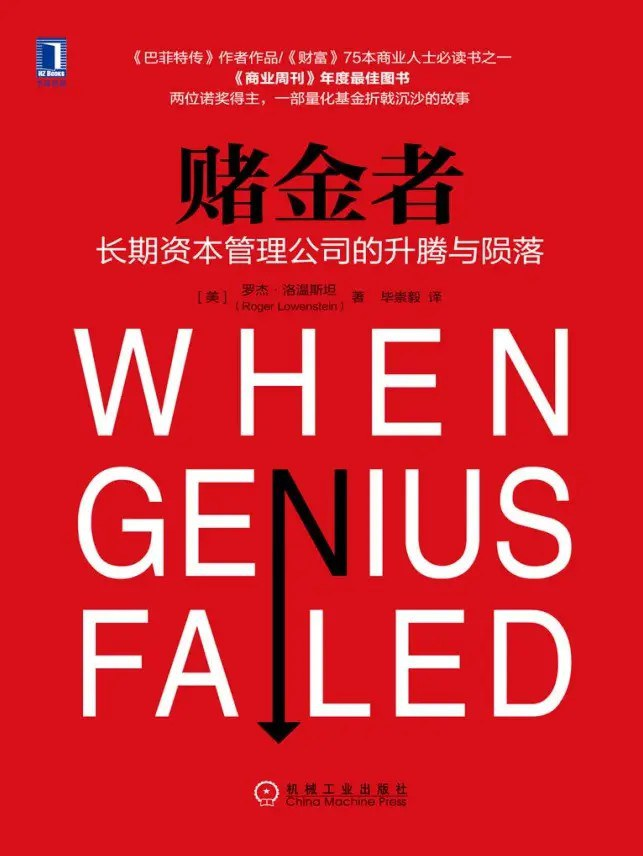

|  |
赌金者：长期资本管理公司的升腾与陨落 |
序言
对于美国央行——联邦储备银行来说，纽约分行是其整个系统中最为重要的组成部分。由于地处华尔街，所以它为美联储在华盛顿的管委会扮演着市场耳目的角色，而当时负责领导该管委会的正是大名鼎鼎的艾伦·格林斯潘。纽约分行的行长是人高马大的威廉·麦克唐纳，此人经常约谈各大银行和证券公司的高管，希望随时了解最新的行业动向，特别是那些可能造成市场动荡或是危及整个金融系统的信息。麦克唐纳总是隐居幕后，因为联邦储备银行的管理活动一直备受争议，它既要为华尔街熙来攘往的人群提供服务，又必须在高度民主化的市场中行为低调。如果说有什么情况需要麦克唐纳亲自出面调解，哪怕很小的活动也会在市场中掀起轩然大波，甚至会引发全面危机。然而在1998年初秋的这起事件中，麦克唐纳不但亲自出马，甚至还做出了罕见的高调举动。
这起事件的源头似乎微不足道，根本无法让人联想到会惊动整个美联储。不过世间的重大纷争不都是这样开始的吗？“波士顿倾茶事件”引发美国独立战争，斐迪南大公遇刺引发第一次世界大战——火药桶一旦点燃，危机便一触即发，导致整个世界都变了模样。这起事件的导火索是长期资本管理基金，这是一家位于康涅狄格州格林尼治市的私营投资合伙公司，距离华尔街只有40多英里的距离。这家公司服务的投资者仅有100名，员工数量还不到200人，而听说过这家公司名号的美国人连1%都不到。这是因为，长期资本管理基金刚刚成立5年。
但是在1998年9月23日那个周三的下午，长期资本管理基金却着实惊动了整个美国金融界。为了应对这家公司引发的危机，麦克唐纳召集（用美联储的话说是“约谈”）了华尔街所有重要银行的头脑。这是有史以来第一次，美国信孚、贝尔斯登、大通曼哈顿、高盛、J.P.摩根、雷曼兄弟、美林、摩根士丹利添惠和所罗门美邦等银行的首席执行官齐聚一堂，在美联储大楼十层的会议室里紧急磋商。他们讨论的问题不是解决某个拉美国家的财务危机，而是如何挽救同行于水火。一同参加会议的还有纽约证交所董事会主席和欧洲各大银行的代表。美联储从未经历过这种大场面，会议室内甚至没有足够多的真皮座椅，以至于好几位执行官不得不坐在临时准备的金属折叠椅上。
虽然麦克唐纳是政府官员，但是这次会议却是秘密进行的。对于大众来说，美国正处于历史大牛市的巅峰时期，只不过市场近期表现跟往年秋季一样出现了一定的下滑。自8月中旬以来，俄罗斯卢布债务违约，全球债券市场出现剧烈动荡。不过，这并不是麦克唐纳约见各大银行高管的原因。
这些高管齐聚一堂的原因，是为了商讨如何拯救处于破产边缘的长期资本管理基金。长期资本管理基金的管理者约翰·梅里韦瑟曾在著名的所罗门兄弟债券公司担任交易员，这位来自美国中西部，性格和善又带有几分谨慎的掌门人在美国金融界很受欢迎。各大银行就是因为他的面子才为这只基金融资，而且同意为其提供极为优惠的贷款条件。实际上，梅里韦瑟只是这家公司抛头露面的人物，该基金的运作核心是一群高度聪明、拥有众多博士头衔的套利高手。这群人里不仅有大学教授，还有两位诺贝尔经济学奖获得者。他们非常聪明，而且他们自己也深知这一点。
成立4年来，长期资本管理基金一直都是华尔街艳羡的目标，因为该基金的年收益率超过40%，而且从未有过败绩或不稳定的表现，好像和任何市场风险都不沾边。基金的超级智囊似乎可以玩转充满不确定性的债券交易市场，成为当代金融界当之无愧的精英。
这只行事低调的套利基金积累的资产高达1000亿美元，而这些资产几乎全部都是借来的，准确地说是从麦克唐纳邀请参加会议的各大银行借来的。这笔债务虽然庞大无比，但还不是长期资本管理基金最糟糕的问题。更可怕的是，该基金投资的数千笔衍生品合约早已渗透到华尔街每一家银行的业务中。这些对市场价格进行外围对赌的合约累计起来更为惊人，其风险敞口远远超过1万亿美元。
如果长期资本管理基金违约，在座所有银行持有的合约都会无法兑现，因为合约的另一方会必然破产。换句话说，每一家银行都会遭遇史无前例的且完全无法抵御的巨大风险。这无疑是非常尴尬的处境，每一家银行都迫不及待地想要抛售合约，尽快卖掉基金的抵押资产套现。
市场交易风险古已有之，但金融衍生品却是相对新鲜的事物。作为管理机构，美联储担心的是此类新型证券的潜在风险，因为它们和整个美国的金融系统紧密关联，早已形成高度复杂的共生系统。在这张巨大的金融网络链条中，如果其中重要一环断裂，谁也不知道将会引发怎样的灾难。麦克唐纳担心整个市场会因此陷入停顿，交易被迫中止，最终导致金融系统崩溃。
贝尔斯登银行首席执行官詹姆斯·凯恩表示，如果这只基金的可用现金流低于5亿美元，那么贝尔斯登将不再清算长期资本管理基金的交易，而会将其彻底扫地出门。要在当年年初这绝对不是问题，因为该基金的资产当时高达47亿美元。然而就在短短5个星期的时间里，准确地说自从俄罗斯卢布债务出现违约之后，长期资本管理基金的经营便每况愈下，资产已经降到最低水平。凯恩认为这家公司就连多挺一天都毫无可能。
截至目前，该基金已经求助过巴菲特、索罗斯和美林银行，求助过每一家能够想到的银行，但仍走到了山穷水尽的地步。正因为如此，麦克唐纳才会像教父一样召集各大银行“家族”聚会，商讨如何施以援手。如果哪家银行抱有私心，偷偷抛售该基金的债券，势必会引发全球性的金融恐慌。反之，如果大家齐心合力，或许这场危机可以得以顺利化解。尽管麦克唐纳没有明示，但是他希望在座的银行高管能够筹集40亿美元来拯救这只基金。这件事必须在当天完成，再拖一天都于事无补。
另一方面，长期资本管理基金疯狂交易导致的风险也给这些投行带来了巨大的伤害。由于出现巨额交易损失，高盛银行首席执行官乔恩·科尔辛因此备受公司合伙人的指责，他们不愿意动用正不断减少的资本去救助竞争对手。旅行者集团和所罗门美邦公司董事长斯坦福·韦尔也蒙受了巨大的交易损失，韦尔担心这些损失可能危及公司和花旗集团的合并，这可是他职业生涯中最为辉煌的标志性事件。韦尔最近刚刚关闭了公司的套利交易部门，几年前该部门曾是助力梅里韦瑟开展投资业务的成功跳板。现在，他已经无意再出资拯救这家公司了。
麦克唐纳环顾四周，在座的投行高管无一不和这只基金存在交易，他们或多或少都有些自身难保。如今这些投行的股票价格一落千丈，这让高管们和麦克唐纳不由地担心，这场由亚洲货币贬值意外引发并波及俄罗斯和巴西，进而累及长期资本管理基金的全球性风暴，将会彻底席卷整个华尔街。
由于被质疑和长期资本管理基金过度交易，雷曼兄弟银行董事会主席理查德·福尔德一直努力辟谣称银行不会倒闭。瑞士联合银行集团的情况也不乐观，集团驻美国代表戴维·索罗认为瑞联银在相关交易中陷入太深。由于对长期资本管理基金的错误投资，导致银行出现巨额损失。来自大通曼哈顿银行的托马斯·拉布里克曾为该公司的对冲基金提供过5亿美元的贷款，现在后悔不已的他只想尽快收回这笔贷款。
在这群人当中，美林银行董事会主席戴维·科曼斯基最为忧心忡忡。在短短两个月的时间里，美林的股价已经被腰斩，190亿美元的公司市值凭空蒸发。由于在债券交易中出现巨额损失，美林银行的信贷评级水平也岌岌可危。
科曼斯基认为，贝尔斯登银行特立独行的执行官凯恩是破解坚冰的关键。负责对长期资本管理基金进行交易清算的贝尔斯登比在座的其他投行的高管更为了解对冲基金业务。看到各位高管紧张得坐立不安，科曼斯基的副手赫伯特·埃里森开门见山，直接问凯恩有何想法。
凯恩的回答斩钉截铁：“贝尔斯登银行绝不会向长期资本管理基金投资一毛钱。”
此言一出，华尔街高管们陷入沉默。紧接着，会议室内开始了一场激烈的辩论。
长期资本管理公司的升腾
第1章 梅里韦瑟
如果说约翰·梅里韦瑟在所罗门兄弟债券公司任职期间有何心得的话，那就是面对亏损毫不畏惧，坚持到底直至获利。说到这里，不得不谈谈梅里韦瑟的资金管理风格是如何形成的。1979年，一家名为埃克斯坦的证券交易公司（J.F.Eckstein&Co.）濒临倒闭，公司老板来到所罗门兄弟债券公司讨论并购。参与讨论的有所罗门兄弟债券公司的合伙人和梅里韦瑟，当时他只有31岁，长着一张娃娃脸，还是个交易员。埃克斯坦对他们说：“我有一笔很好的交易，但是公司已经无法继续维持，你们能否考虑收购？”
当时的情况是这样的，埃克斯坦公司从事的是国库券期货交易，顾名思义，它交易的是以未来固定价格提供美国国库券的合约。国库券期票的交易价格往往比现票稍低，在套利交易中，埃克斯坦会买入期票、卖出现票，然后等待两种价格的收敛。因为大部分人的心理都一样，都希望以与现票相同的价格购买期票，因此自然会期望两者的价格逐渐趋同。这就是套利交易的本质，它不但是埃克斯坦和长期资本管理基金的操作秘诀，也是每一位套利者的操作方式。实际上，埃克斯坦并不清楚这两种证券的价格是上涨还是下跌，这一点根本无足轻重。对他来说，重要的是这两种价格会相对出现怎样的变化。
通过买入期票、做空现票（即预测现票价格会下跌），埃克斯坦做的是双向赌局。无论价格是涨是跌，这种操作都可以保证一半胜率和一半赔率。只要期票这种价格低廉的资产的上涨（或下跌）幅度稍微大于（或小于）现票的上涨（或下跌）幅度，埃克斯坦就能确保盈利面大于亏损面。这就是套利交易的基本概念。
埃克斯坦已经尝试过这种赌局很多次，大多数都取得了成功。随着钱赚得越来越多，他的赌注也开始逐渐加码。但是不知为何，1979年6月这种稳赚的模式出现了逆转，国库券期票的价格超过了现票价格。但自信满满的埃克斯坦并未在意，认为这种异常情况会被市场自动调节过来，于是投入重金进行交易。遗憾的是，这一次期票和现票之间的价格差并未收敛，而是变得越来越大。面对无力支付的高昂保证金，埃克斯坦只能变卖公司。
当时，梅里韦瑟刚刚在所罗门兄弟债券公司内部成立债券套利部。他马上意识到埃克斯坦的操作方式可行，因为国库券期票和现票之间的价格差迟早会出现收敛。那时所罗门兄弟债券公司的总资产只有2亿美元，如果同意收购就可能蒙受上千万美元的资本损失。经过一番讨论，各位合伙人虽然惴惴不安，但还是接受了收购方案。接下来的几周，价格差持续扩大，所罗门兄弟债券公司出现严重亏损。公司的资本金余额每天都记录在一本小册子上，放在合伙人艾伦·法恩的办公室门口。每天下午，大家都会紧张不安地朝法恩的办公室张望，想知道今天又亏了多少。每到此时，梅里韦瑟总是一脸镇定，最后一个过去查看。公司经理约翰·古特弗罗因德对他说：“这笔交易最好赶快盈利，否则就炒你的鱿鱼。”
最后的价格差果然出现了收敛，所罗门兄弟债券公司大赚了一笔。由于当时几乎没人懂金融期货交易，只有梅里韦瑟熟悉如何操作，所以次年他就晋升为公司合伙人。更重要的是，他的小部门——固定收入套利交易部，现在有权使用公司的资金进行差价交易了。至此，梅里韦瑟找到了自己的终生目标。
西北大学毕业后，梅里韦瑟在高中教了一年的数学，然后考取了芝加哥大学商学院。在芝加哥大学读书期间，他的同班同学中有一位名叫乔恩·科尔辛，其父是一位农场主，此人后来成为梅里韦瑟在华尔街的竞争对手。1973年从商学院毕业后，梅里韦瑟进入CAN财务公司做分析员。次年，这位刚刚27岁、身体结实的年轻人，带着成熟的目光和迷人的微笑加入所罗门兄弟债券公司。那时的所罗门兄弟还是一家小公司，不过历史很快会向人们证明，这家公司将会为债券市场带来怎样翻天覆地的新变化。
20世纪60年代中期之前，债券交易市场一直是一潭死水。投资者从本地银行信托部购买债券以期获得稳定收入，只要这些债券不违约投资者就心满意足，而从未想过别的操作方式。那时没有多少投资者热衷于交易债券，提出管理债券组合实现更高收益或是跑赢大盘指数的想法无异于异想天开，因为当时连指导债券交易市场的指数都没有。所罗门兄弟债券公司的西德尼·霍默可以说是债券交易领域的大师，此人是画家温斯洛·霍默的远亲，其母是大都会歌剧院的女高音歌唱家。霍默毕业于哈佛大学，著有大部头的《利率发展史》（A History of Interest Rates：2000BC to the Present），是一位儒雅的学者，这种人物在当今的华尔街早已销声匿迹。
霍默那个时代的市场和今天相比，其特点是固定化——固定的货币、固定的利率和固定的黄金价格（每盎司35美元）。但是20世纪60年代末横扫西方世界的通胀大潮彻底改变了这一局面。在通货膨胀的影响下，利率水涨船高，以4%的利率买入的债券几乎损失了一多半的价值。1971年，美国宣布美元和黄金价格脱钩，阿拉伯国家实施石油禁运。在这些重大事件的影响下，如果债券持有者仍对金融稳定抱有一丝幻想，由优质蓝筹股持有的宾夕法尼亚中央铁路公司的破产无疑粉碎了这一幻想。债券投资者大多陷入严重亏损，无法像以前那样获得稳定回报。慢慢地，各国政府不得不取消对利率和货币的限制，采用固定汇率机制的时代一去不复返。
计算机是出现在这一时代的另一个重大变革。直到20世纪60年代末，交易员如果要了解债券价格，就必须查阅一本厚厚的蓝皮书。1969年，所罗门兄弟债券公司聘请数学家马丁·莱博维兹为其操作公司有史以来的第一台计算机。莱博维兹很快成为当时最受欢迎的数学家，至少在债券交易市场大热阶段的确如此。那时，所罗门兄弟债券公司的交易员没空翻阅蓝皮书，总是围在他身边问个不停，因为现在他们必须同时了解期票和现票两种价格。到了70年代初，交易员们拥有了原始的手摇式计算器，这一微小变化显著加快了债券市场的工作节奏。
梅里韦瑟刚加入所罗门兄弟债券公司时在回购部工作，负责融资业务，那时正是债券交易业务翻云覆雨之时。原来稳定可靠、风险较低的债券交易现在涌现出新的变化和机会，让很多年轻且目光敏锐的分析员趋之若鹜。梅里韦瑟初到纽约时一个人也不认识，他在曼哈顿一个体育俱乐部租了间房住下，并很快发现债券市场非常适合自己。债券交易之所以吸引有数学天分的人，是因为决定其价值的变量是可以量化的。简单地说，决定一只债券的价格有两个要素。第一个要素可以从债券息票上总结出来。如果你今天以10%的利息出借资本，购买回报率为12%的债券时就必须支付溢价。这个溢价该怎么确定呢？这要根据债券到期时间、购买时机，以及个人对未来利率变化的看法决定。此外还要考虑债券发行商设计的各种小名目，如债券是否可回售、能否转换成股权等。
第二个要素是违约风险。在大多数情况下，债券违约风险无法严格量化，不过也不会很高，但风险仍是存在的。像通用电气这样的企业，其债券违约风险较低，但是和美国政府（指美国国债）相比就差远了。同样的道理，惠普公司的经营不如通用电气，它的债券违约风险就会稍高一些，而亚马逊网站会更高。因此，如果债券投资者借钱给亚马逊和通用电气，肯定要求前者的回报利率高于后者。同样的道理，如果玻利维亚政府和法国政府都发行国债，投资者肯定要求前者的回报利率高于后者，因为法国政府违约的风险显然低于玻利维亚政府。设定回报利率可以说是债券交易的核心，但决定交易活动的往往是价差。债券风险越高，其价差就越大，即债券回报和（几乎无风险）国库券回报之间的差距。通常来说（不一定总是如此），价差还会随着时间的增长而扩大。例如，对于两年期债券和30天债券，投资者肯定要求前者提供较高的回报率，因为更长的到期时间意味着更大的资金回收风险。
1977年成立的套利业务组标志着所罗门兄弟债券公司重要而微妙的转折。该部门的交易模式正是20世纪90年代长期资本管理基金成立之后亦步亦趋所仿效的。可以说，套利业务组是梅里韦瑟实践交易风格的实验场，他正是在这里逐渐形成并习惯了加大赌注的冒险行为。虽然所罗门兄弟一直都从事债券交易，但公司主要侧重于风险较低的业务，比如为其客户代为买卖债券。但是梅里韦瑟领导的套利业务组则不同，它是在用公司自己的资金下赌注。又由于是新兴领域，因此梅里韦瑟几乎鲜有对手，其交易收获相当丰厚。如同埃克斯坦收购案一样，他在交易中赌的始终是债券期票和现票，或者说两种债券之间的价差会逐渐收敛。虽然也可以反向操作，赌债券价差逐渐放大，但梅里韦瑟绝大部分交易赌的都是价差缩小。与此同时，和他对赌的通常是保险公司、银行或投机商，而梅里韦瑟对此并不清楚，实际上也毫不关心。在个别情况下，这些投资者会感到恐慌并撤出资金，导致价差进一步扩大，让梅里韦瑟暂时出现损失，不过这种情况并不持久。只要他投入的资金毫不动摇，最终都会获得回报，至少梅里韦瑟的交易经验表明确实如此。换句话说，债券之间的价差最终总是会逐步缩小，这就是梅里韦瑟从埃克斯坦收购案中总结的宝贵经验，也是他后来在长期资本管理基金长期依赖的经验。颇具讽刺意味的是，要不是因为成功来得太快被冲昏了头脑，梅里韦瑟不应忘记这次收购给埃克斯坦带来的同样宝贵的教训：即便前期交易失利最终一定会扭转乾坤（暂且假设交易初期一般都会蒙受损失），但如果胜利之日遥遥无期，你又能坚挺多久呢？换句话说，如果等待形势扭转的时间太漫长，交易者很可能熬不到胜利曙光的出现就已经破产了。
到20世纪80年代初，梅里韦瑟已成为所罗门兄弟债券公司的耀眼新星，他的不善言辞和总是紧绷着的面容非常适合债券交易员这个角色。威廉·麦金托什是所罗门兄弟债券公司的合伙人之一，曾负责面试前来求职的梅里韦瑟，他回忆称：“梅里韦瑟的心思隐藏得很深，让人很难猜透他心里在想什么。”梅里韦瑟以前的同事迈克尔·刘易斯在《说谎者的扑克牌》（Liar’s Poker）中对他也有同样的描述：
无论交易输赢，他总是一副严肃的神情。我觉得他有一种强大的能力，可以控制交易员最常见的两种情绪——恐惧和贪婪。这种特质使他成为罕见的意志坚定者，可以毫无畏惧地为了个人目标勇往直前。
令人遗憾的是，这本书强调了一个伪造的故事，据说梅里韦瑟有一次在牌局中单局向古特弗罗因德叫板1000万美元。这个故事不但可疑，更重要的是它把梅里韦瑟刻画成了一个胆大妄为的莽夫，然而事实并非如此。梅里韦瑟始终主张精心算计的赌局，他行事总是小心谨慎，从不给自己犯错的机会。他的成长背景、家庭和过去的经历对同事们来说就像一张白纸，有人甚至说他和别人“泾渭分明，格格不入”。梅里韦瑟非常强调个人隐私，以至于后来长期资本管理基金登上首页新闻之后，《纽约时报》记者也无从了解其家庭背景，最后根据朋友的描述而在文章中误称他是家中独子。沉默寡言对于交易员来说是一种十分宝贵的品质，但光有这一点显然还不够。梅里韦瑟很清楚自己缺少什么，他缺少的是优势，就好像那种高中时代形成的自身特长，一种可以让所罗门兄弟债券公司在债券交易领域鹤立鸡群的东西。
对于这个问题，他的解决方案异乎寻常地简单：为什么不直接招聘更聪明的交易员为自己服务呢？梅里韦瑟要寻找的是那些愿意把市场交易视为智力活动的高手，而不是那些每天忙得像绿头苍蝇只求寻食果腹，仿佛原始人一般的平庸之辈。当时美国学术界有不少书呆子型的数学家，他们多年来一直在发表晦涩难懂的市场研究文章。华尔街也招聘过此类人才，但他们的工作仅限于市场研究，并不涉足实际交易活动。在华尔街，证券交易员总是戏称这些人为“金融工程师”，认为他们并不适合搞证券交易。克雷格·科茨是所罗门兄弟债券公司政府债券交易主管，此人是典型的交易员形象：高大和蔼、英俊潇洒，天生喜欢跟客户打交道。虽然在大学期间成绩不怎么样，但他在校篮球队打过前锋，而且对证券交易具有很大的激情。不过，这种热爱恰恰是梅里韦瑟想要从交易员身上剔除的品质。他更喜欢学者的冷静自律，依靠严格的和高度量化的手段去分析市场。
尽管大多数华尔街高管都感到学术界神秘呆板，但当过数学老师且拥有芝加哥大学工商管理硕士学位的梅里韦瑟对此却如鱼得水。因为，这才是他的优势所在。1983年，梅里韦瑟给埃里克·罗森菲尔德打电话，询问能否推荐几位学生过来。罗森菲尔德毕业于麻省理工学院，性格温顺，在哈佛商学院担任助教。他的父亲是麻省康科德市一位小有成就的资金经理（money manager）。罗森菲尔德是个电脑迷，当时已经在使用量化工具进行投资活动。不过他在哈佛的日子并不好过。罗森菲尔德无疑非常聪明，但是他的课讲得过于简洁，显得干巴巴的，而且在课堂上缺少指点江山的气度，看起来没有说服力。远远看去，他就像一根又瘦又长的麻秆，学生们都不服他。有一位同事回忆称：“有一次学生们甚至把他暴打了一顿。”接到梅里韦瑟的电话时，罗森菲尔德正在批改试卷。据他回忆，那时他的年薪差不多是3万美元。罗森菲尔德一口答应了梅里韦瑟，并亲自为所罗门兄弟债券公司物色人选。10天之后，他加入了这家公司。
梅里韦瑟再接再厉，在罗森菲尔德之后，他又请来了伊朗裔的犹太人维克托·哈贾尼，此人拥有伦敦经济学院金融硕士学位；来自阿肯色州的格雷戈里·霍金斯，他曾帮助克林顿竞选州检察长，后来在麻省理工学院获得金融经济学博士学位；以及威廉·克拉斯科，此人拥有麻省理工学院博士学位，是一位非常善于运用数学思维考虑问题的经济学家，也是罗森菲尔德在哈佛的同事。不过要说梅里韦瑟招到的最古怪且最聪明的学者，恐怕要数劳伦斯·希利布兰德了，他在麻省理工学院拿到了两个学位。希利布兰德一开始供职于所罗门兄弟债券公司的研究部——典型的书呆子扎堆的地方。但梅里韦瑟很快就发现这是位奇才，然后把他调到了套利业务组，正是这个部门为以后的长期资本管理基金奠定了基础。
这帮家伙很快聚集到了华尔街，他们极尽所能地四处下载所有债券交易的历史价格信息，从中提取数据关系，然后开发数学模型，模拟这些价格未来可能出现的变化。这样一来，当市场价格出现偏离时，计算机模型就会提前做出预测。
当然，计算机模型并不会下交易指令，它们只不过是提供背景信息以供人脑进行判断。换句话说，这些模型实现了复杂交易的简单化。或许两年期国库券收益和十年期债券收益的价差并没有人们通常想得那么大，但如果和另一个国家类似债券的价差相比，或许这一价差又会显得太小。总而言之，这些模型可以把各个市场的交易情况浓缩成一个简单而突出的问题，就好像该部门有人所说的那样：“了解了世界各地的市场信息之后，如收益曲线形状、波动性和利率，金融市场报表之间还会有什么差异？”这就是学者们讨论市场的方式，也是他们思考问题的方式。在他们眼中，每一种价格都是一份报表，如果两份报表相互矛盾，就表明市场存在套利交易的机会。
套利业务组共有12人，内部关系非常密切。这个组的位置就在所罗门兄弟债券公司闹哄哄的交易大厅中央，由两排桌椅组成，就是汤姆·沃尔夫在电影《夜都迷情》投行里的那种摆设。兰迪·希勒曾在该部门担任抵押品交易员，由于受不了这里的圈子文化而选择离开。对于这样的人，梅里韦瑟总是以“叛徒”视之，甚至命令其他同事不得再和此人打高尔夫，以此作为报复。不过离开的毕竟是少数，大部分人都留了下来，他们对梅里韦瑟极为推崇，谈到他时都会压低声音，仿佛那是带领族人的部族长老。梅里韦瑟虽然很少夸奖同事，但是却为他们带来了更大的回报。他的兴趣和好奇心不断激励着这些学者使自己和整个团队变得越来越出色。而且，这位管理者对于属下高度尊重，他从不对他们大喊大叫，哪怕自己有权这样去做。对这些交易员来说，代表梅里韦瑟姓名缩写的“J.M”字样，简直像永不磨灭的星光一样闪耀。
虽然在楼上有独立的办公室，但梅里韦瑟还是经常待在交易厅中，和同事们一起挤在小办公桌上。他总是烟不离手，一边关注欧元、美元的交易动向，一边监督这些学者们的工作，并随时提出试探性的问题。他的谦逊低调很好地掩饰了其内心的远大目标。梅里韦瑟经常说，招到的员工必须比自己更聪明。他从来不谈自己，但是大家似乎并没有发现这一点，因为他总是对别人做的事情很感兴趣。梅里韦瑟虽然没有亲自开发数学模型，但是他对模型内容了如指掌。之所以信任这些模型，是因为它们是自己的下属开发的。有一次，一名叫安迪的交易员在抵押品交易中出现亏损，向他请求加倍投入资金，梅里韦瑟想都不想就同意了。安迪问：“关于这笔交易，你难道不想多了解一些信息再决定吗？”梅里韦瑟的回答让对方大受感动：“我招你进来就完全信任你。”
梅里韦瑟虽然了解市场，但是他作为交易员的作用明显被夸大了。实际上，其真正的过人之处在于影响他人，这种影响往往是以非常低调的方式潜移默化而成的。梅里韦瑟不善于当众发言，说起话来磕磕巴巴，让听众听着有点费劲。但是他的脸上总是洋溢着对团队的自信，这能有效激发下属的士气。受这种高度自信的影响，梅里韦瑟团队的战斗力十分强大；但是从另一个方面来说，这种情况也可能导致盲目和刚愎自用，让这帮学者本已存在的自信心继续膨胀。另外，梅里韦瑟毫无保留地支持希利布兰德和其他成员利用公司资金进行交易，此举透露出的信号其实很危险——让这个团队认为任何资金需求都能得到满足。
1987年，收购大王罗纳德·佩雷尔曼对所罗门兄弟债券公司发起恶意收购。这件事让古特弗罗因德充满顾虑，因为一旦收购成功，公司信誉良好的投行形象将会付之东流。（所罗门兄弟债券公司的不少企业客户也在佩雷尔曼的恶意收购名单上。）为挫败对方的企图，古特弗罗因德决定把公司控股权出售给另一位投资者——比较友善的亿万富豪沃伦·巴菲特。希利布兰德对此感到很恼火，因为经过全面数学分析之后，他认为这是一笔不合算的交易。这位年仅27岁的神童虽然相当实诚，但他并不清楚所罗门兄弟债券公司的道德形象如果遭到破坏将会造成多大的资产损失。这位老兄愤愤不平地专程飞到奥马哈去见已成为公司董事会成员的巴菲特，希望他能回售股份，结果遭到了对方的拒绝。
这件事发生后，梅里韦瑟决定约束一下这帮年轻小伙子，给他们灌输点儿企业忠诚意识。面对其他部门一浪高过一浪的抗议声，梅里韦瑟邀请希利布兰德和罗森菲尔德与公司合伙人威廉·麦金托什一起吃饭，听听所罗门兄弟债券公司的创业故事。作为一个在爱尔兰天主教家庭环境中长大的自由民主党人，梅里韦瑟高度关注公司的共同福祉，认为这样可以为你死我活的证券交易行业带来一些温情。他并不同意下属不时提出的跳出公司另立炉灶的看法，对他们说：“我必须对我的老板负责，有这种想法只能说明你们太贪婪。去看看纽约的贫民窟，你们简直身在福中不知福。”与此同时，梅里韦瑟也敦促公司对内部进行清理改革。但和下属不同的是，他同样关注其他部门的利益。如果需要动用更多的资金，经过深思熟虑之后他会对首席财务官说：“我们有一笔很大的交易，有可能会损失很多钱，我觉得应该告诉你一声。”在1987年金融危机期间，套利业务组一天之内就损失了1.2亿美元。尽管公司其他部门并不清楚这帮家伙到底在做什么、投资杠杆率有多高，但是他们还是打心眼儿里信任梅里韦瑟，就连他在公司里的竞争对手也欣赏他。只不过，这一切很快将会戛然而止。
在感到愤怒的人群中有位34岁的交易员，名叫保罗·莫泽尔，此人以前是套利业务组的一员，几年前被调离这个部门，去负责政府债交易工作。莫泽尔身材瘦长，两只眼睛紧靠在一起，性子比较急躁。1991年，就在希利布兰德奖金事件过去一年之后，莫泽尔来到梅里韦瑟跟前坦白了一个大事件：他向美国财政部提交虚假投标，获得了未受批准的政府债券拍卖权。
梅里韦瑟大吃一惊：“还有其他违规行为吗？”莫泽尔说没有了。
梅里韦瑟马上向古特弗罗因德汇报了情况，他们和另外两位高管都认为这是一起严重违规，但不知为何对此并没有做任何处理。虽然对莫泽尔感到恼火，但梅里韦瑟依然对他很负责。这并不奇怪，对于高度强调内外有别、积极袒护下属的梅里韦瑟来说，他也做不出过河拆桥这种事。他向领导反映，莫泽尔是名勤奋的员工，这次只不过是偶尔犯错，建议继续让他负责政府债券业务。事后来看这是一个很大的错误，不是道德错误，而是梅里韦瑟“用人不疑”思想导致的判断失误。实际上，莫泽尔是个很不稳定的交易员，他在交易过程中不是冷静追求利润，而是经常因为怄气而做出完全不理智的举动。他曾多次毫无忌惮地违反公司规定，不但抹黑了梅里韦瑟的信誉，而且危及整个公司的形象。可以说，莫泽尔这次违规实在是愚不可及，以至于各级上司压根儿没想过该怎么处理。作为公司债券业务的总负责人，梅里韦瑟哪里想得到自己的下属会对美国财政部撒谎。不过事发之后，梅里韦瑟对此毫不追究确实令人费解。又过了几个月，所罗门兄弟债券公司吃惊地发现莫泽尔向梅里韦瑟坦白的情况原来大为缩水，他犯下的其他违规行为还有很多。这一次，公司没有等闲视之，赶紧把情况向上面做了汇报，结果让美国财政部和美联储大为光火。这起丑闻引发的轰动远远超出了违规行为本身应得的处罚，这或许是因为事件造成的影响极其恶劣。不管怎么说，美国财政部岂是你一个小小职员可以戏耍和欺骗的？最终，这件事导致华尔街传奇人物古特弗罗因德的黯然离职。
随后，巴菲特连夜从奥马哈赶来主持大局，担任公司的临时首席执行官。他到任后的第一件事就是向各位高管询问：“我们能否保住梅里韦瑟？”梅里韦瑟不但是公司的摇钱树，而且在工作责任方面也令人无可指责。作为其下属的交易员纷纷挺身而出，证明事件发生后梅里韦瑟马上向上级做了汇报。然而这些努力在当时的情况下已经于事无补，面对丑闻带来的巨大压力，当初招聘梅里韦瑟进入公司的麦金托什来到位于42楼的办公室，对他说为了公司着想最好还是主动辞职。整件事发生得太快，在套利业务组还没搞明白情况时，他们的经理就已经离职了。辞职风波来得如此突然，以至于梅里韦瑟自己也感到难以置信。更糟糕的是，一时间他成了各大媒体争相报道的封面人物。后来他向《商业周刊》表示：“我是一个非常害羞、高度内省的人。”实际上这起风波的幕后真相是，梅里韦瑟成了公司的替罪羊，自己并没有做错什么却替别人背了黑锅。媒体的大肆渲染从此让他行事更为低调，这也为后来的长期资本管理基金埋下了隐患。与此同时，在套利业务组内部，大家正在想方设法让老领导赶快回归。希利布兰德和罗森菲尔德依然保留着梅里韦瑟的办公室，里面的球杆、桌椅和电脑全都原封未动，和他离开时一模一样，就好像这位经理去外面度长假了。不过新来的执行官德里克·莫恩可不这么想，觉得让梅里韦瑟回来只会对自己构成挑战。果不其然，一年后，当梅里韦瑟处理完莫泽尔事件造成的法律问题之后，希利布兰德和罗森菲尔德（两人已分别担任套利业务和政府债业务主管）便开始游说公司领导，让梅里韦瑟回来当联合首席执行官。
追加一倍的投资显然太过分了，管理层最终决定让希利布兰德维持交易现状。最终，这次交易还是为公司赢得了回报。但这件事让管理者意识到，不能纵容希利布兰德一边批评其他部门乱花钱，一边毫无限制地动用公司资金随时为套利业务补窟窿。由于几位高管就该业务的可用资金数额和可承受风险程度等问题无法达成一致意见，因此只认死理的希利布兰德不得不对他们长篇大论几个小时。他们要讨论的问题简而言之就是，如果这一市场弹簧真的变形了，套利业务组最多能承受多少投资损失？实际上，巴菲特和芒格对希利布兰德那一套复杂的数学描述没有多少信心。巴菲特同意让梅里韦瑟回来，不过不能像希利布兰德建议的那样，把整个公司交给他负责。
无论如何，梅里韦瑟已经不可能风光无限地回归所罗门兄弟债券公司了。“莫泽尔丑闻”彻底堵死了他的退路，使其无法再回到原来的高位。不过，这件事也为梅里韦瑟带来了新的机遇。这位时年45岁、一头自来卷发、眼神深不可测的昔日功臣已不再留恋所罗门兄弟债券公司，而是决定成立新的套利基金或对冲基金自己单干。他已经做好了对老东家进行突袭的准备。
第2章 对冲基金
20世纪90年代初，梅里韦瑟准备重操旧业时，美国的投资行业正处于黄金期。越来越多的美国人开始拥有投资产品，股价一飞冲天；市场指数一次又一次地创下新高，前一天的纪录第二天就会被刷新。投资者们虽然眼花缭乱，但他们并不感到满足。这是一个黄金时代，也是一个动荡时代。一旦有闲暇时间，美国人马上就会紧张不安地盯着电脑屏幕，关注市场的最新动向。股票显示屏无处不在，无论在健身房、飞机场还是酒吧，人们都能看到不停跳动的价格。学者专家们卖力鼓吹牛市或熊市，虽然从不靠谱，但老百姓还是听得津津有味。投资者们既贪婪又警惕，一夜暴富起来的人希望寻找新的投资渠道——即使股市崩溃也不会让他们出现重大损失的渠道。
其实在美国《证券法》中，对冲基金这一表述并不存在。在实际生活中，它指的是一种有限合伙基金，这种基金早在20世纪20年代就曾少量出现过。被誉为“价值投资之父”的本杰明·格雷厄姆大概是经营对冲基金的第一人。与共同基金不同的是，这种合伙型基金是在华尔街幕后运作的，是针对富豪的私募型基金，很大程度上完全不受管理约束。这种基金无须在证券交易委员会登记，有一些只需要在华盛顿的商品期货交易委员会做简单登记。对于大部分对冲基金来说，其投资组合内容都是秘而不宣的。通常，它们可以通过选择客户从而借贷到足够多的资金（或是得到足够多的银行贷款，两者通常是一回事）。对冲基金和共同基金的另一个不同点在于，它们不必考虑投资多样化，而是可以最大限度地集中投资组合。实际上，对冲基金可以随意选择任何一种或多种新型投资手段，如期权、衍生品、卖空、高杠杆收益产品等。
为享有这种投资自由，对冲基金必须对投资者设定严格的准入门槛。换句话说，它们更像是一种私人俱乐部游戏。按照法律规定，基金可招募不超过99位投资者，每人或每家机构的准入资金不低于100万美元；或是招募500位投资者，每人拥有的投资产品不低于500万美元。这一规定暗示的信息是，如果一只基金只对少数百万富翁和机构投资者开放，那就意味着证交会之类的机构根本懒得去管理监督。当然，游戏这么玩必须有一个前提，即这些百万富翁知道自己在干什么，因为缺乏监管意味着一切损失他们都必须自行承担。
在当前金融市场中，对冲基金管理者是一个颇为神秘的群体。但是在20世纪八九十年代并非如此，有几家对冲基金管理机构可谓臭名昭著，其中最有名的非外币投机者乔治·索罗斯莫属。1992年，索罗斯的量子基金狙击英格兰银行，通过卖空迫使英镑急剧贬值。一时间该基金名声大噪，这笔交易使其获利高达10亿美元。几年后，由于迫使东南亚货币急速贬值，索罗斯成为众矢之的，不过把这件事全部归咎于他似乎有失公允。在索罗斯和其他高调管理者（如朱利安·罗伯逊和迈克尔·斯坦哈特）的“努力”下，对冲基金成功地树立起敢于搅乱市场的大胆海盗形象。斯坦哈特曾吹嘘称，他们那帮人是美国少有的拥有资本主义拓荒时期城堡的人。这是一群胆大包天的冒险者，要么获得滚滚盈利，要么输得惊心动魄。在1998年版的《韦氏大学英语词典》中，对冲基金一词的释义为“高风险的投机手段”。
其实除了这些声名狼藉的个例外，大部分对冲基金都相当低调温和，这才是它们的本质和迷人之处。“对冲基金”是个通俗说法，源自于“对冲赌局”这一表达，意为通过设定反向操作的方式在投机交易中避免出现损失。这一说法大概来自于搭建篱笆墙以免花园遭到破坏的概念，最早见于莎士比亚的文学作品。在阿尔弗雷德·温斯洛·琼斯之前，从来没人想过在投资基金中使用这一表达。琼斯是梅里韦瑟效仿的前辈，此人曾在1949年成立一只合伙型基金。虽然合伙型基金早已有之，但琼斯这位在澳大利亚出生的《财富》记者却是第一个以平衡方式（即对冲方式）管理投资组合的人。由于担心股票会在熊市中下跌，琼斯决定通过对冲方式中和市场风险，即同时做多和做空股市。和大多数投资者一样，他也是买入看起来价格较低的股票，与此同时卖空估价过高的股票。至少从理论上说，琼斯的投资组合具有市场中立效果。这样一来，无论是发生战争、总统弹劾还是天气变化，任何可能导致市场出现上行或下行的事件都只能带来部分影响，使他一半的投资上涨，另一半的投资下跌。至于投资净收益，这要取决于他选择股票的能力，即能否做到去芜存菁。
当美国人都忙着比较投资回报率时，名不见经传的对冲基金被悄悄地蒙上了一层神秘的色彩，它们似乎可以帮助富豪们绕开市场风险，实现投资的稳赚不赔。在周末的烧烤会上，人人都在谈论共同基金，但共同基金实在是太逊色了！对于有身份的人，那些在汉普顿度假，用意大利名牌搞奢侈装修的人，经常光顾艺术展和慈善晚宴的人，投资对冲基金才显得有地位，因为搞这一行的都是华尔街智商最高的家伙。当人人都在谈投资的时候，在网球场边漫不经心地透露对冲基金经理正为自己打理投资，还有什么能比这更有面子？换句话说，对冲基金俨然成了豪富和精英的代名词。有意思的是，对冲基金征收的管理费高得令人咋舌，这不但没有吓倒投资者，反而让更多的人趋之若鹜。在他们看来，要不是由绝顶聪明的天才管理资金，谁会收取这么高的费用？对冲基金管理者不但享有很高比例的投资利润，而且要求占有一定比例的投资资产。
出于种种原因，对冲基金的数量在美国一下子出现了井喷。1968年，根据证交会的统计，美国只有215只对冲基金。而截至20世纪90年代，这一数量超过3000只（没有人知道确切数量），涉及的投资风格和资产类型五花八门。在这些对冲基金中，大部分规模都很小，全部资产加起来大约有3000亿美元。相比之下，共同基金的资产规模高达3.2万亿美元。尽管如此，投资者还是渴望更多选择。他们不停地寻找既大胆又安全的普通衍生品，这些产品不一定风险最高，但操作一定最可靠；不一定名气最响，但管理者一定要最聪明。没错，这就是梅里韦瑟打算建立的对冲基金。
效仿阿尔弗雷德·琼斯的投资风格，梅里韦瑟认为长期资本管理基金应注重债券市场的“相对价值”交易。公司可买入卖出一些债券，根据特征进行配对，然后赌其价差会扩大还是缩小。比方说，如果意大利的利率比德国高不少，这就意味着前者的债券比后者便宜，如果价差缩小，买入意大利债券并卖空德国债券就会盈利。这是一种相对低风险的交易策略。由于债券的涨跌通常是同步的，所以价差变化不如债券本身变化那么大。和琼斯的基金一样，从理论上说无论市场是涨是跌，甚至是崩溃，长期资本管理基金都不会受到影响。
和琼斯的基金最大的不同之处在于，梅里韦瑟一开始就计划让长期资基金采用20~30倍，甚至更高倍数的资金杠杆。这是长期资本管理基金取得成功必须采用的策略，因为在大多数情况下，债券买卖之间的价差实在是小得可怜。要想凭借这么小的价差来大举获利，长期资本管理基金就不得不把赌局放大很多很多倍。打个比方来说，这一策略的效果就像游乐场里的跷跷板，只要设置合适的杠杆支点，小孩子也能轻松撬起比自己重几倍的庞然大物。金融交易中的杠杆率发挥的也是同样的作用，它能有效放大投资者的获利能力，因为你借贷的资本会像本金一样带来投资回报。当然，反过来说这种操作如果失败，投资亏损也会成倍地增加。如果出于某些原因长期资本管理基金的投资策略失败，由此造成的损失将会非常庞大，而且增长速度也会非常惊人。这种情况一旦出现可以说是性命攸关，不过在当时看来似乎还遥不可及。
1993年年初，梅里韦瑟打电话给美林银行董事会主席丹尼尔·塔利。由于担心莫泽尔事件仍对自己不利，梅里韦瑟开口便问：“你是否认可我的行业信誉？”塔利表示认可。随后，塔利安排梅里韦瑟和美林银行负责对冲基金募资的主管碰头。没过多久，美林银行同意为长期资本管理基金募集启动资金。
梅里韦瑟的计划可谓雄心勃勃，虽然没有所罗门兄弟债券公司几十亿的资本、信贷、信息网络和7000多名员工，但他却希望基金能复制套利组的巨大成功，把业务延伸到全球范围，建立庞大的市场优势。作为所罗门兄弟债券公司的昔日功臣，如此被扫地出门令他感到十分耻辱，而最好的报复莫过于创造更大的成就。
梅里韦瑟希望募集的资金是25亿美元，这简直是一个天文数字，一般基金的启动资本最多只有250万美元。可以说，关于长期资本管理基金的一切都是那么雄心勃勃，它的管理费也比行业平均水平高得多。梅里韦瑟及其合伙人可享有25%的投资收益，外加总资产每年2%的管理费。相比之下，大部分基金管理者只要求享有20%的投资收益和总资产每年1%的管理费。梅里韦瑟认为这样的收费有利于维持国际化运作，其实这不过是其雄心壮志的一种体现而已。
此外，该基金要求投资者承诺至少3年的投资锁定期，这也是对冲基金行业中闻所未闻的。锁定投资不难理解，如果市场环境不利于基金表现，锁定投资期限可以为长期资本管理基金提供一个缓冲期，就好像银行没钱时可以对储户说“明天再来”一样的道理。这样做等于让投资者无条件地信任梅里韦瑟。对于尚无盈利业绩的他来说，这种要求似乎有些过高了。尽管套利业务组在他的领导下为所罗门兄弟债券公司日进斗金，但这家公司的具体盈利情况却从未对外正式披露过。退一步说，即使投资者知道他是公司的摇钱树，但是对于他如何交易盈利仍然一无所知。整个基金最根本的东西，那些模型、价差和闻所未闻的各种衍生品，都是投资者搞不清楚的。更何况，要完全信任莫泽尔事件的主角，刚刚接受过证交会处罚的梅里韦瑟，投资者们怎能不心存疑虑？
当美林银行忙着为基金制订募资方案时，梅里韦瑟的老部下也开始从所罗门兄弟债券公司纷纷离职。1993年，埃里克·罗森菲尔德第一个退出，伊朗裔犹太人维克托·哈贾尼紧随其后，他在所罗门兄弟债券公司交易大厅公开宣布这个消息时甚至赢得满堂喝彩。7月，格雷戈里·霍金斯退出公司。至此，梅里韦瑟团队核心只差希利布兰德一人了，此时他正陷入左右为难的境地，一边是所罗门兄弟债券公司拼命想要留住这位赚钱大师，另一边是梅里韦瑟也在热情地召唤他归队。出于对老同事的敬意和负责，梅里韦瑟执意把董事会非执行主席的职位留给“华尔街之王”，曾经执掌所罗门兄弟债券公司的古特弗罗因德，只要他愿意放弃和所罗门两败俱伤的欠薪之争。对于套利组的成功，古特弗罗因德是一个被人忽略的人物，实际上他曾发挥过非常重要的作用，在交易员偶尔冲动过头时给他们泼泼冷水。现在他不用这么做了，在长期资本管理基金，梅里韦瑟自然会亲自管教这帮下属。
无论从哪个层面来说，和古特弗罗因德或这帮极富天分的年轻交易员相比，显然梅里韦瑟更为迫切需要一种资质证明。他需要建立优势，可以向投资者证明其大胆计划可行的优势。他必须重新打造团队，向投资者表明这不是一帮搞债券的毛头小伙子，他们是在进行一场目标更为宏大的金融实验。现在他要招聘的可不是什么默默无闻的大学助教，依靠这种角色肯定筹不到25亿美元。这一次，梅里韦瑟直接把目光对准了学术界的顶尖人物——来自哈佛大学，被众多学者认为是金融界泰斗的罗伯特·C.默顿。默顿曾培养过好几代华尔街交易员，其中包括埃里克·罗森菲尔德。20世纪80年代，罗森菲尔德曾游说默顿担任所罗门兄弟债券公司咨询顾问，因此套利业务组对他来说并不陌生。更重要的是，默顿的名号就像一块敲门砖，不但在美国极为响亮，还可以轻松叩开欧洲和亚洲的市场大门。
默顿之父是哥伦比亚大学著名的社会科学家罗伯特·金·默顿，长期从事科学家行为方式的研究。在儿子出生后不久，老默顿萌生了利用儿子检验自己提出的“自我实现预言效应”（即“皮格马利翁效应”）的想法。这种效应认为，由于担心银行倒闭而拼命跑去取钱的储户，最后真的会导致银行倒闭，有点像“狼来了”的故事。在纽约市郊哈德森的黑斯廷斯长大的小默顿，从小就练就了通过系统方式解决大小问题的能力。作为资深棒球迷和汽车爱好者，他下了不少力气牢记每个球员的平均击球率，以及每一款美国汽车的发动机型号标准。打扑克牌的时候，他会盯着灯泡看以收缩瞳孔，沉浸在自己的世界中仿佛身边什么都不存在。好像要效仿父亲研究的那些科学家一样，小默顿很早就表现出许多与众不同之处，就像后来有作家描述的那样，他随时都在“寻找身边一切秩序的存在”。
在加州理工大学读研时，默顿对投资产生了兴趣。他经常早上六点半就赶到当地的交易所等待纽约股市开盘，然后花上个把小时进行交易并观察市场。后来，他幸运地转到麻省理工学院学习经济学。20世纪60年代末，经济学家刚刚开始把金融转型为数学学科。在经济学大师保罗·萨缪尔森的指导下，默顿所做的工作毫不亚于开创一个全新的世界。直到那时，经济学家们才终于建立起描述市场运行的数学模型，至少从理论上，该模型能够揭示市场在任何时点的具体表现。默顿在金融领域开创的成就，可以比拟牛顿对物理学的贡献，他孜孜不倦地对一系列极其微小的时点进行价格建模，建立起“持续时点金融”。几年后，法国兴业银行衍生品研究专家斯坦·乔纳斯对其盛赞称：“有关金融学的一切，默顿早在20世纪70年代的笔记中就已经全部提到了。”默顿的讲义笔记也成为金融学专业的蓝宝书。
20世纪70年代初，默顿开始解决费希尔·布莱克和迈伦·斯科尔斯这两位经济学家研究了一半的问题：为股票期权推导价格计算公式。他敏锐地察觉到期权和标的股票之间的密切关系，并通过完美的数学运算解开了这一难题。但是他并不急着发表成果，而是静待两位前辈先行一步。最终，这一公式被命名为布莱克-斯科尔斯模型，成为金融界具有深远影响的大事件。由于股票期权市场当时尚不存在，因此一开始很少有人听说或关注这一公式。凑巧的是，就在公式发表一个月之后，芝加哥期权交易所宣布股票期权挂牌交易。很快，得州仪器公司开始在《华尔街日报》刊登销售广告，称：“布莱克和斯科尔斯就是使用我们的计算器推导期权价格公式的。”就这样，美国金融界才开始走上衍生品发展之路。在此之前，从未有学者能如此深刻地影响过华尔街。
到了20世纪80年代，梅里韦瑟和很多交易员已经可以像操作股票和债券那样熟练地交易各种金融衍生品了。不同于实际的证券，衍生品不过是从股票、债券或其他资产的价值中衍生而出的合约。例如，股票期权的价值、在指定时间以指定价格购买股票的权利等，这些价值和权利都会随着标的股价的变化而变动。
接到长期资本管理基金的邀请时，默顿高兴得几乎跳了起来，因为这是一个在真实环境中检验其金融理论的好机会。他认为金融衍生品已经打破了投资公司、银行和其他金融机构之间的界线。在默顿参与创造的衍生品无处不在的新时代，任何人都可以承担贷款或提供股权的风险，只要设计相关合约就可以转移这些风险。对这种新事物来说，其功能意义远远大于形式意义。实际上，抵押债券的出现已经证明了衍生品是可行的，以前只能由本地银行提供的抵押贷款服务，现在只要通过资产证券化就可以从不同渠道吸引各种投资者的资金。
因此，默顿并不认为长期资本是一只“对冲基金”，他们这些大学者是不屑于使用这种表达的。在他们看来，这是一种最新的金融中间服务，可以像银行那样为市场提供资金。我们都知道，银行通过吸储放贷的方式维持运营，它的资产（即贷款）必须和负债相吻合，因为放贷收取的利率略高于向储户支付的存款利率，银行服务本质上赚的就是其中的价差。与此类似，长期资本管理基金通过卖出和买入不同债券的方式进行借贷操作，前提是这些债券需求量较低，可产生稍高的利率回报。正因为如此，基金才能像银行那样赚取价差。当然，这个表述过于简化，通过买入风险较高（收益也较高）的债券，长期资本管理基金还可以为市场提供“流动性”，而银行并不提供这种服务。由于默顿的贡献，新兴的对冲基金终于有了积极正面的意义。
遗憾的是，默顿对于推销基金毫无帮助。他满脑子都是严肃的理论，而且在哈佛大学忙于授课，无暇进行产品推广。1993年夏天，梅里韦瑟又招了一名学术明星：迈伦·斯科尔斯。虽然斯科尓斯在学术界算不上是重量级人物，但他在华尔街的名气可不小，这主要归功于他参与开发的布莱克-斯科尔斯期权价格模型。斯科尔斯也曾在所罗门兄弟债券公司工作过，和梅里韦瑟等人关系不错。拥有这两位金融界大腕和诺贝尔奖候选人之后，长期资本管理基金就像请来了乔丹和拳王阿里，知名度马上出现了飙升。一位后来投资该基金的资金经理称：“投资者对于这只神秘基金变得越来越好奇了。”
1993年秋天，美林银行大胆的募资行动开始启动了。他们把重要客户用豪华轿车迎接到位于曼哈顿南端的美林银行总部，为其举行基金说明会。在签字承诺不会泄密之后，再送他们打道回府。随后，美林银行和各方合作伙伴开始路演，先后经过波士顿、费城、塔拉哈斯、亚特兰大、芝加哥、圣路易斯、辛辛那提、麦迪逊、堪萨斯城、达拉斯、丹佛、洛杉矶、阿姆斯特丹、伦敦、马德里、巴黎、布鲁塞尔、苏黎世、罗马、圣保罗、布宜诺斯艾利斯、东京、中国香港、阿布扎比和沙特阿拉伯。长期资本管理基金为每位投资者设定的准入门槛是100万美元。
路演一开始进行得很糟糕。梅里韦瑟虽然像个发言人，但是透露的信息太少，好像多说一句都会导致基金泄密。美林银行负责基金筹款工作的戴尔·迈耶牢骚满腹：“人人争睹梅里韦瑟的风采，谁想到他一句话也不说。”行事稳健的罗森菲尔德更是低调，他的演讲让人昏昏欲睡。默顿以前的学生格雷戈里·霍金斯最糟糕，演示产品时画了一黑板的代数公式和希腊符号。总之，这帮人根本不会画饼，听上去完全是一群数学教授在讲课。就连基金的名称也中规中矩，缺乏吸引力，只有默顿这位老先生对此赞赏不已。这样的路演怎能吸引投资者呢？有些人放弃是因为梅里韦瑟不愿多谈投资策略的细节，有些人则被过高的杠杆率吓得不敢尝试，而这一点还是梅里韦瑟反复思考之后才肯透露的内容。像洛克菲勒基金会和洛斯集团等机构投资者，看到如此高的管理费都退缩不前。毕竟，长期资本管理基金的投资策略尚未经过检验，那些建议机构进行投资的顾问以及有权决定企业资金投资方向的主管都感到犹豫不决。
致力于提升基金形象的梅里韦瑟毫不气馁，他来到奥马哈和巴菲特共进晚餐。梅里韦瑟很清楚，只要巴菲特愿意投资，其他人马上就会跟进。这位谈笑风生的亿万富豪一如既往，话语友善且充满鼓励，可就是不愿掏钱投资。
在美国第一富豪那里受挫之后，梅里韦瑟又找到乔恩·科尔辛，此人长期艳羡梅里韦瑟为所罗门兄弟债券公司所做的贡献，一心想在高盛银行也搞一个部门与其竞争。科尔辛面对两种方案犹豫不决：是继续在高盛服务还是投资梅里韦瑟的新基金呢？最终，他两个方案都没有选择。瑞士联合银行对此也考虑了很久，但最终还是放弃了投资。未能争取到这些投行对梅里韦瑟打击很大，虽然已经尽力了，但他还是担心所罗门兄弟债券公司的风波阴魂不散。现在，他急需获得机构投资者的支持。
为了建立优势，梅里韦瑟决定向外国银行求助，吸引它们成为基金的准合伙人，以此为基金提供国际化色彩。每一家被冠名为“战略投资者”的银行需投资1亿美元，可分享关于本地市场的内幕消息。至少从理论上说，此举对基金和国外银行来说是互惠互利的。这个点子是梅里韦瑟想出来的，通过“战略伙伴”的高帽子给潜在投资者拍马屁。默顿很欣赏这个想法，因为这验证了他提出的传统机构投资者之间的关系将会被改变的理论。现在，基金募资工作变成了两条战线：一边是梅里韦瑟对国外银行独立招商；另一边是美林银行继续负责开发内部客户。
为改变局面，美林银行推出了独创的“分类平台”系统，有效地推动了基金的募资情况。具体而言，分类平台可以帮助长期资本管理基金针对每一个税务和法律相关领域的投资者募集资金。例如，它们的不同平台包括普通美国投资者、免税型养老金、希望对日元资产套期保值的日本客户，以及只在交易所投资上市产品的欧洲机构投资者。（该基金可在爱尔兰股票交易所挂牌交易。）
分类平台并不留存资金，它们不过是把资金转向中央基金的渠道。所谓的中央基金即长期资本组合基金，一只在开曼群岛注册的合伙型基金。为便于操作，长期资本组合基金即长期资本管理基金，它才是负责买卖债券和管理资产的真正实体。而负责经营该基金的长期资本管理公司是梅里韦瑟及其合伙人和配偶共同所有的注册于美国特拉华州的企业。这么复杂的组织关系在外人看来可能有点乱，但是却受到了合伙人的欢迎，认为自己有能力组织其他基金难以涉足的复杂交易，体现了公司的优势。不过从实际经营角度来看，这帮人中无人在开曼群岛或特拉华州，而是在康涅狄格州格林尼治和伦敦等地办公。
营销活动启动后，合伙人们决定稍事休息。他们集中在律师托马斯·贝尔（美国盛信律师事务所合伙人）的办公室里，罗森菲尔德突然激动得大喊大叫：“快看！看我们的老东家做了什么？”他把报纸在桌上铺开，上面赫然列出所罗门兄弟债券公司的营收报表。这家公司终于决定对外宣布套利业务组的收入贡献，这样长期资本管理基金就可以拿着这份报表向投资者炫耀战绩了。这份报表清晰表明，梅里韦瑟率领的部门对所罗门兄弟债券公司的收入贡献最大。在过去的5年时间里，套利业务组每年创造的盈利都超过5亿美元。不过，这仍不足以打动投资者。无论美林银行怎样恳求，这群合伙人仍对交易策略三缄其口。长期资本管理基金甚至拒绝透露交易案例，潜在投资者根本不清楚合伙人推荐的方案到底是什么。毕竟，债券套利交易那时还是鲜为人知的新事物。
烟不离手的埃德森·米切尔是美林银行负责监督基金募资活动的主管，对于让梅里韦瑟开口畅谈他早已不抱任何希望，那情形就好像梅里韦瑟根本没意识到自己是来借钱的。即便在私下沟通时，他也绝不向米切尔透露哪些银行打过电话，他认为这些全都是最高机密。面对如此戒备的客户，米切尔就连向自己的老板推销基金都不可能。他曾建议美林银行成为该基金的战略合作伙伴，但负责管理资本市场的戴维·科曼斯基想了想还是拒绝了。他同意美林银行向该基金投资1500万美元，除此之外再不肯多投一分钱。
路演中的状况也不少。有一次斯科尔斯、霍金斯和美林银行负责人长途跋涉来到印第安纳波利斯，拜访大型保险公司康塞科（Conseco）。到达那里时他们已经非常疲惫，斯科尔斯开始介绍长期资本管理基金如何在相对有效的市场中进行交易。突然，观众中有一位30岁左右的衍生品交易员喊道：“不可能有那么多交易机会，国库券市场怎么可能赚那么多钱？”此人名为安德鲁·周，虽然只有金融学硕士学历，但丝毫没有被布莱克-斯科尔斯模型的创始人的名号吓倒。怒火中烧的斯科尔斯把椅子转向他，针锋相对地说：“怎么不可能？就是因为有你这种傻瓜存在，所以我们才能赚这么多钱！”顿时会场大乱，台下一片抗议指责声，最后闹得不欢而散。因为这件事，美林银行要求斯科尔斯出面道歉。霍金斯觉得这实在是太搞笑了，简直笑得直不起腰来。
就这样，斯科尔斯意外接触到了一帮新保守主义经济学家。当时，尤金·法玛和默顿·米勒等学者正在开发当代金融学的核心理念——有效市场假设。该假设认为所有股票价格总是正确的，因此没有人能够预测市场的未来方向，也就是说必然会出现随机走向。当然，要想保证价格永远正确，价格制定者必须高度理性且拥有全面信息。实际上，这一假设假定世界各地所有的交易所（至少是足够多的交易所）都是依靠高度冷静的、宛如希利布兰德这样的交易员来确定股票价格的，对于任何证券他们既不会多付一分钱，也不会少付一分钱，而是完全准确地体现其真实价值。曾和斯科尔斯一起在芝加哥大学学习，后来自营投资公司失败的维克托·涅德霍弗认为，斯科尔斯坚信随机论，是全面反对市场无效观点的忠实支持者。有一次，有位地产经纪人向斯科尔斯兜售大学附近海德公园的房产，称这一带的房价一年之内会上涨12%。斯科尔斯反驳称，如果真是这样，这里的房子早就被抢光了。尽管坚信市场有效论，但斯科尔斯始终认为自己可以战胜市场表现。20世纪60年代末，他曾把所有工资投入股市，借钱支付日常生活费。结果股市大跌，他不得不求银行宽限偿贷期限，以免贱卖股票承受重大损失。最终他的股票还是回本了，不过这位长期资本管理基金合伙人并不知道，以后求银行的日子还有很长。
默顿是顶尖的理论学者，而斯科尔斯的贡献在于开发独特的方式对理论进行验证。默顿寡言少语，而斯科尔斯总是争论不休，热衷于不停地提出问题让大伙儿讨论。虽然这些讨论很少会维持一天以上，不过经常可以碰撞出充满创意的火花。鉴于这一爱好，斯科尔斯在所罗门兄弟债券公司工作时成立了衍生品交易小组，为公司做出了实质性的贡献。此外，斯科尔斯还是一位资深的免税代码专家，对美国和海外的税务情况了如指掌。他认为税务活动是庞大复杂的智力游戏，他曾轻蔑地称：“其实没有人真正交过税。”斯科尔斯认为为了避税有些人会无所不用其极，或许这些人并不符合芝加哥大学对经济自足者人类模型的描述。在长期资本管理基金，斯科尔斯建议合伙人把利润分配推迟到十年以后，这样可以有效避免缴纳税负。他喜欢抓住细节和律师们长篇大论，其他合伙人对此早已屡见不鲜。实际上，他们挺喜欢斯科尔斯的精力充沛和积极向上。他总是不停地搞新花样，还会尝试滑雪等新式运动。据梅里韦瑟称，斯科尔斯打起高尔夫球来也是充满激情。
斯科尔斯加盟之后，基金的营销工作逐渐开始有了起色。他们抛出诱人的承诺，对投资者表示30%的年收益率（扣除合伙人管理费之后）根本不成问题。虽然他们明确表示投资存在风险，但同时也强调基金会通过多样化投资分散风险。他们的投资组合遍布全球，这样可以保证把鸡蛋放进不同的篮子里，以免风险过于集中。这样一来，即使某个市场出现暴跌也不会影响基金的整体表现。
合伙人们坚持不懈地挖掘优质的潜在客户，邀请他们到格林尼治，去古色古香的公司总部参观。有些投资者甚至要接触七次或八次，这些身穿卡其裤和高尔夫球衫的合伙人看起来超级自信。毕竟，他们曾为所罗门兄弟债券公司赢得过丰厚的利润，这让不少投资者相信他们将会继续创造辉煌。面对这群学术界天才，投资者们虽然并不清楚梅里韦瑟这帮家伙到底是怎么赚钱的，但潜移默化中他们已经逐渐建立起了信任。后来成为投资人的瑞士银行家的雷蒙德·贝尔称：“这是一群天才，他们知道该怎么赚钱。”截至1993年年底，即使在基金开放日期严重落后于原定时间的情况下，承诺投资的款项还是如潮水般涌进了公司。就在这时，希利布兰德终于决定离开所罗门兄弟债券公司加入他们，这个消息极大地鼓舞了所有合伙人的士气。默顿和斯科尔斯不过是营销基金的光环，希利布兰德才是确保公司盈利的保证。
此外，梅里韦瑟还增加了两位新的合伙人。这两人都是他多年的球场好友，分别是所罗门兄弟债券公司主管理查德·莱希，以及同样经营过债券交易公司的詹姆斯·麦肯蒂。不同于长期资本管理基金的书呆子，莱希是个平易近人的销售员，他要负责跟华尔街的银行家打交道，这可不是脑子里只有一根筋的交易员们擅长的工作。麦肯蒂在公司的角色有点让人困惑。自从卖掉自己的公司之后，他就四处高调出游，不是乘坐直升机出门，就是飞到格林纳达去度假，由此获得了“酋长”的外号。和坚信书本的交易员不同，出生于纽约布朗克斯区的麦肯蒂是位老派分子，依靠直觉进行交易。不过梅里韦瑟喜欢和这些朋友来往，有他们的陪伴会让他感到放松和合群。这也难怪，莱希和麦肯蒂也是爱尔兰裔美国人，跟他们在一起梅里韦瑟感觉就像回家一样轻松。此外，他们还合伙拥有另一项让梅里韦瑟感到亲切的资产——一个位于爱尔兰西南海岸、名为沃特维尔的精致高尔夫球场。
1994年年初，梅里韦瑟团队迎来了另一位重量级人物：美联储副主席戴维·马林斯。此人的声望和地位仅次于美联储主席艾伦·格林斯潘。马林斯也是默顿以前在麻省理工学院的学生，后来到哈佛大学任教，和罗森菲尔德是朋友。作为美国央行官员，他能为长期资本管理基金带来接触国际银行的宝贵机会。另外，马林斯还是美联储负责处理莫泽尔案件的负责人，他的加盟对梅里韦瑟来说是绝好的人格证明。
马林斯和青少年时代的梅里韦瑟一样短暂接触过股票投资，他的父亲是阿肯色州大学的校长和哈佛大学备受欢迎的讲师。有意思的是，莫林斯的政府工作生涯源自担任金融危机顾问。如果市场再次失灵，他可以担任长期资本管理基金的防灾专家。1987年股市崩溃后，马林斯曾参与为白宫编写《蓝带报告》，强烈指责新生的衍生品金融市场，认为其抛售行为加速了股市崩溃。后来他进入财政部，参与拟定相关法律救助美国破产的储蓄贷款银行。作为管理者，马林斯对市场非常了解，认为它并不是完美无缺的定价机器，不时会出现危险的偏离和暴跌。在跳槽到长期资本管理基金一年之前，他曾表示：“我们的金融系统发展速度太快，创新步伐太大，其设计思想允许不时出现市场误差。”对未来基金拥有更为全面的认识，马林斯认为美联储的重要任务是帮助私营投资机构免受“流动性”问题的困扰。
如此强大的全明星阵容让私人投资者也头晕目眩，更何况他们还请来一位在任的央行官员，这似乎表明华尔街的投资游戏比格林斯潘的政策管理更胜一筹。长期资本管理基金很快就取得了重大突破。在日本，公司从住友银行获得1亿美元的投资。在欧洲，吸引了德国德累斯顿银行和列支敦士登全球信托银行。瑞士私营银行宝盛银行积极为其客户做基金推销，这些客户资产规模都在3000万~1亿美元之间。由跨国银行家埃德蒙·萨弗拉管理的隐秘机构共和纽约公司，也相信长期资本管理基金的明星管理团队，并认为该基金可以为其带来更多业务，因此投资了6500万美元。此外，巴西最大的投行加兰蒂亚银行也参与了投资。
在美国国内，投资长期资本管理基金的社会名流和机构有很多，如好莱坞经纪人迈克尔·奥威茨、鞋业巨头耐克公司首席执行官菲尔·奈特、麦肯锡咨询公司合伙人，以及纽约石油公司执行官罗伯特·贝尔佛。贝尔斯登银行首席执行官詹姆斯·凯恩认为，长期资本管理基金就是摇钱树，那点儿管理费不过是九牛一毛。和梅里韦瑟及其合伙人一样，凯恩也高度自信，自掏腰包投资了1.46亿美元。（罗森菲尔德等人把孩子的奶粉钱都投进去了。）学术界也不甘落后，面对这帮教授魅力十足的耀眼光环，圣约翰大学和叶史瓦大学各投资了1000万美元，匹兹堡大学投资500万美元。在谢克海茨，帕拉贡地产咨询公司（Paragon Advisors）也在向长期资本管理基金推荐富豪客户。公司总裁特伦斯·沙利文在商学院时读过默顿和斯科尔斯的书，认为他们的交易风险很低。
在企业界，普惠公司认同长期资本管理基金的投资理念，向其投资1亿美元。公司董事会主席唐纳德·马龙另外个人投资1000万美元。其他投资者包括百得公司养老金、纽约大陆保险公司（后被洛斯集团收购），以及总统寿险公司等。
1994年2月底，长期资本管理基金正式开放经营。梅里韦瑟、罗森菲尔德、霍金斯和莱希买了一批可以存放多年的上等勃艮第葡萄酒，开怀畅饮以示庆祝。除了11位合伙人，该基金还拥有30位交易员和员工，价值1000万美元的SPARC工作站，这些电脑系统在当时都是交易员和工程师们梦寐以求的。至此，长期资本管理基金的募资闪电战共筹集到12.5亿美元，虽然没达到梅里韦瑟的期望目标，但也是有史以来规模最大的启动资金了。
第3章 春风得意
幸运之神开始对长期资本管理基金微笑了。他们的融资时机恰到好处，资金投入运营时恰逢华尔街出现动荡局面，投资者急于寻找安全的避风港。颇为矛盾的是，其实市场越是动荡之时，投资者的获利机会反而越多。当市场价格都一潭死水时，交易会变得兴味索然。价格的波动会带来许多漩涡和潜流，使平静的水面瞬间布满泡沫。对于这只新基金来说，市场波动正好为他们提供了施展身手的机会。以前相伴相行的两只债券现在突然分道扬镳，导致稳定的价差不再同步出现。一时间，所有投资者都感到天旋地转，失去了目标和方向。心理素质较弱和缺乏安全感的投资者会陷入恐慌，不择手段和价格进行抛售。当很多人都这样做时，危险的逆流就会扭曲整个市场。对于极少数继续拥有资产和敏锐投资目光的人来说，此时正是大举入市的好机会。
1994年梅里韦瑟结束募资活动时，格林斯潘开始担心美国经济过热。此时马林斯正准备收拾行李离开美联储前往长期资本管理基金。临行前，他催促格林斯潘收紧信贷。12月，正当利率价格处于历史最低水平，投资者感觉市场已经降至谷底时，格林斯潘宣布提高短期利率的决定震惊了整个华尔街。这是5年来美联储首次宣布加息。如果说这位美联储之神的初衷是为了稳定市场，那后来的事实证明这一招完全是适得其反。由于债券价格和利率水平呈反向移动，因此这一决定迅速导致债券价格狂跌。虽然行事一向温和的格林斯潘只加息了0.25个百分点，但债券价格还是出现了超跌。绝望的投资者不得不抛售债券资产了。
5月，就在长期资本管理基金成立不到两个月之后，美国30年期国库券已经从价格顶峰狂跌了16%，对于相对波动较小的固定收入证券来说这是一个巨大的变动，使其收益率从6.2个百分点升至7.6个百分点。欧洲债券也在狂跌。各种投资者，包括对冲基金在内，已经深陷债务危机，开始纷纷逃离债券市场。利用资金杠杆进行投资的迈克尔·斯坦哈特面对如此恐怖的形势简直不知所措。斯坦哈特从事的是欧债交易，利率每上涨1%个基点其资产就会损失700万美元。短短4天的时间里，这位冒险王就为客户损失掉了8亿美元；号称国际货币交易大师的乔治·索罗斯，仅仅两天时间就为客户损失了6.5亿美元。
这种市场乱象对梅里韦瑟来说是绝好的机会。在市场抛售的那段时间里，有一天上午他走到一位交易员身旁，盯着屏幕吃惊地说：“这么多卖单，简直是一波接一波啊！”梅里韦瑟很清楚，恐慌的投资者在逃离市场时根本不计较价格，只要能卖出就好。这种“热情”抛售无疑会拉大价差，为梅里韦瑟提供千载难逢的投资机会。在写给投资者的信中，他非常罕见地插了一句：“债券市场的这种重大波动和价差的扩大有关，价差扩大有利于我们的基金对赌价格收敛并进行相对价值交易。”两个月后，长期资本管理基金在5月实现了7%的增长，已经急不可待地要大展身手了。此时对于梅里韦瑟来说，很难想象长期资本管理基金有一天会和那些高度恐慌、过度杠杆的对冲基金同日而语。实际上，1994年为长期资本管理基金提供盈利机会的那次债市崩溃，完全值得管理者给予更为深刻的关注。
很快，市场评论人员开始发现国际债券市场之间出现了新的关联。《华尔街日报》称：“看似无关的市场风波正在反作用于美国国债市场。”很多不相干的事件，如欧洲债券下跌、信孚银行出现交易损失、抵押债交易对冲基金阿斯金资本管理公司倒闭、墨西哥总统竞选对手遇刺身亡，全都在加剧美国国债市场的下跌。而所有这一切，全都始自格林斯潘看似微不足道的加息。
一时间，所有市场之间的关系开始紧密起来，这种局势对于长期资本管理基金至关重要。它意味着某个市场的趋势会波及另一个市场，某个产品的崩溃会带来所有产品的崩溃。金融衍生品的出现可以使人们随心所欲地针对任何市场对资产进行定制化包装和交易，纽约的投机者可以飞到日本市场交易，荷兰的投机者可以跑到巴西下赌注，这些司空见惯的情况都有可能引发某个市场的混乱并波及其他市场。对于围坐在电子屏幕前的交易员来说，市场之间的区别几乎毫不存在——无论美国的抵押债还是法国的政府贷款，本质上毫无区别。衍生品的出现已经把所有市场和所有产品涵盖到了统一风险之下。面对市场上慌不择路急于摆脱债务的投资者，瑞士信贷第一波士顿银行经济学家尼尔·索斯在接受《华尔街日报》采访时称：“这时候不是应该卖哪个的问题，而是能卖哪个就卖哪个。”一旦采用杠杆，投资者的交易控制权已经拱手让出，自己完全无法掌握。我们需要明白这样一点：各种证券虽然看起来毫无关联，但被同一群投资者拥有之后，一旦出现危机它们无形中便会产生关联。当大量金融投机分子全都交易同一类证券时，产品之间的差别就不存在了。因此，长期资本管理基金所谓的多样化投资保障安全的操作策略，在这样的情况下并不可行。
斯坦哈特把自己的失败归咎于市场“流动性”的突然蒸发，这个词几年后也成了长期资本管理基金的口头禅。其实，流动性不过是个假象。无论任何时候，只要市场出现下跌，投资者都会吃惊地发现买家好像全都消失了。凯恩斯认为，对于市场而言，从整体上说并不存在“流动性”这一说法。它不过是人们的一种误解，想当然地认为市场有责任保持流动性，或者说卖家准备交易时买家就得提前等着。1994年股市崩溃的真正元凶是杠杆交易。如果你没有负债交易，你就不会破产，不会被逼卖出手中的股票。因此，这种暴跌和增加流动性毫无关系。如果是采用杠杆炒股的公司，为了避免损失的迅速扩大导致破产，不得已就只能被迫卖出股票。正所谓“成也萧何，败也萧何”，杠杆在放大投资收益的同时，往往也蕴藏着巨大的破坏能量。
长期资本管理基金无疑是好运连连，它在准备投入资本时债券价差正好扩大，投资机会出现之后，它是少有的几家拥有头寸、趁乱布局的基金之一。这些交易机会非常好，虽然说仍有风险，但足以让该基金不加区别地进行杠杆交易。总体上说，这帮家伙实在是既聪明又好运，长期资本管理基金依靠这些交易马上开始赚钱了。
在他们的第一批交易中，值得一提的是30年期美国国债。国库券（无论到期期限）是美国政府为联邦预算募资而发行的一种债券。美国每天都会发行1.7亿美元左右的国债，这些债券被认为是全球范围内风险最低的金融产品。有意思的是，30年期国库券发行6个月后，投资者不是把它们锁进保险柜就是塞进抽屉里长期保存。随着市场上流通量的减少，这种债券变得很难交易。与此同时，政府会发行新的30年期国库券在市场上流通。在华尔街，这种剩余29.5年到期的老债券被称为非流通债券，政府新发行的被称为流通债券。由于流动性差，非流通债券不太受市场欢迎，交易时会有折扣（可以以较低价格买到，或是同等价格下拿到较多数量）。用套利交易的术语来说，这时价差就形成了。
1994年，长期资本管理基金发现这种价差大得有些离谱。1993年2月发行的30年期国库券，收益率为7.36个百分点；6个月后，收益率降到了7.24个百分点，差了整整12个基点。每个星期二，长期资本管理基金的合伙人都会开风险管理会议。这天早上，有人建议赌这12个点的价差会缩小。对这群学者来说，光知道“这只债券便宜，那只债券价格高”还不够，他们还必须了解价差为什么会出现，这就不可避免地谈到最为关键的问题——价差会维持现状还是继续扩大？在这个案例中，出现如此高的价差很难想象。毕竟，美国政府不太可能只清偿30年到期的流通债券，也不太可能清偿还有29.5年到期的非流通债券。但很多投资机构往往太过胆小和官僚主义，除了当前的流通债券之外概不经营非流通债券。长期资本管理基金认为，很多交易机会都是因为此类机构的武断造成的，因为这样会导致市场扭曲，进而提供套利的可能性。这些机构愿意为流通债券支付溢价，长期资本管理基金的合伙人早在所罗门兄弟债券公司时对此交易就已经轻车熟路，自然乐意为其提供流通债券。他们把这种交易称之为“关门交易”，因为两种债券的价差用不了几个月就会逐渐合拢，整个过程就像关门一样。实际上，长期资本管理基金为收购低流动性债券会向对方收取一定的费用。
罗森菲尔德表示：“我们的很多交易活动都是在提供流动性，买入人人想要卖出的东西。”罗森菲尔德显然没有意识到，既然长期资本管理基金大量买入每一个市场的低流通证券，那其资产必然会彼此相关而不是完全独立，也不可能像掷色子那样每一把抛出去都完全不同。如果真出现“人人”抛售的情况，那时基金的资产肯定会变得高度雷同。
12个基点的价差其实微乎其微，老实说根本用不着大动干戈。每1000美元的债券组合，其中的价差只有15.8美元。即使这一价差在几个月内缩小三分之二，长期资本管理基金也只能赚10美元，即交易价格的1%。如果通过杠杆放大价差效应会怎样呢？对长期资本管理基金来说，这根本就是毋庸置疑的策略。于是，公司马上买入10亿美元较便宜的非流通国债，同时卖出10亿美元较贵的流通国债。这一来一去就是20亿美元，可以说这帮合伙人简直是赌上了基金的全部家当。不过可以确信的是他们不会出现多大损失，因为同时买入和卖空，他们赌的是债券价差的收敛。众所周知，债券价差的变动和债券本身相比要小得多，这无疑为他们带来了极大的成功希望。这就好比你的房子价格可能出现暴跌，不过不用担心，如果真的发生了，邻家的房子价格也会暴跌。当然，市场也有可能出现价差扩大的风险，至少短期之内会存在。既然两只债券可以以12个基点的价差进行交易，谁能保证它不会扩大到14个基点，或是在极端情况下增至20个基点呢？
长期资本管理基金一向以精准预测闻名，通过计算他们得出的结论是，同时买入卖空两只债券与单向交易一只债券相比，前者的风险概率只有后者的二十五分之一。因此，基金认为进行双向交易的杠杆比例应当维持在25倍。这一杠杆比例既能显著放大收益，又可能加倍造成损失。无论如何，资金借贷都是不可避免的。为买入价格低廉的非流通债券，它们需要从一家或多家华尔街银行贷款。同样；要卖空流通债券，它们也必须获得银行贷款。
虽然这一交易是长期资本管理基金最为简单的活动，但其中涉及的操作还是比较复杂的。公司一旦获得非流通债券之后，马上会把它们贷出到一些华尔街公司，这些公司需向长期资本管理基金支付现金作为担保。随即，长期资本管理基金会把收到的现金转给上家，作为自己借入债券的资金担保。在华尔街，这种短期担保式借贷被称为“回购协议融资”。
这笔交易的魅力在于，长期资本管理基金的现金交易操作得天衣无缝。基金用于做多（买入）的资金和用于做空（卖出）的资金完全吻合。它支付出去的担保金和从别人那里得到的担保金完全一致。换句话说，长期资本管理基金自己一毛钱没花就玩转了20亿美元的双向交易。
通常，如果你从银行（比如说美林银行）借入债券，除了担保金外，还必须额外支付一点费用。比如说1000美元的债券需要支付1010美元的价格，如果是高风险债券，额外支付的费用会更高。这10美元的初始保证金，即债券价值的1%，被称为垫头，是美林银行自我保护的手段，以防债券价格出现上涨。
垫头往往决定着基金的交易额。如果不用支付垫头，你就相当于获得了无限借入权，就好像开车不用汽油一样，想开多快就开多快。只要能取消向美林银行支付垫头，债券交易的收益率就会得到显著提升。
实际上从开始运营起，长期资本管理基金的策略就是拒绝支付垫头或压低垫头比例。这一策略是梅里韦瑟提出的，别看他总是一脸谦逊，可一旦涉及交易、高尔夫、台球、赛马或是任何与赌局相关的活动，他可绝不含糊，坚决奉陪到底。罗森菲尔德和莱希，这两位合伙人都是好脾气，通常负责跟银行打交道，有时也会带上希利布兰德。不管通过哪种方式，客气也好坚决也罢，这帮人就是一根筋——我们的基金这么优秀，没必要支付初始保证金。再说，他们也根本不和要求支付垫头的银行合作。不得已，美林银行只好放弃这一要求继续合作，高盛、J.P.摩根、摩根士丹利也先后同意，几乎每一家银行都乖乖就范。另一边，由于拒绝了这一要求，普惠公司从未从该基金获得过一单业务。对梅里韦瑟非常仰慕的老同学，高盛银行的乔恩·科尔辛称：“和这只基金合作你毫无选择，什么都得听他们的。”
虽然长期资本管理基金的交易细节高度复杂，交易次数成千上万，但它经常操作的策略就那么十几种。像国库券套利交易，涉及的是有形证券的买卖；而衍生品交易根本没有实际交易对象，此类交易不过是长期资本管理基金与银行和其他金融机构对市场价格走向的对赌而已。
我们可以把这种对赌想象成红袜队和扬基队球迷赛季开始前的打赌，比如对方球队每得一分，失败一方必须支付另一方1000美元。长期资本管理基金的衍生品合约，其交易本质也是如此，只不过双方赌的是债券和股票的价格走向，而不是进球数和击球数。此类衍生品交易并不出现在基金的资产负债表中，也不会表现为正常意义的“债务”。但是如果市场朝基金预测的相反方向发展，导致的结果很可能是致命的。长期资本管理基金一般不会为衍生品交易支付初始保证金，不管怎么说这样做都是有道理的。
很多情况下，长期资本管理基金衍生品交易的回购协议融资也能享有和实际证券交易同样的融资条件。合伙人说服银行为其提供比其他基金更长的贷款时间，这样一来，基金交易变得更加游刃有余。即使银行想要收回贷款也很难快速达到目的。对此，一位投行高管称：“这帮人很会谈条件，把所有银行都变成了一根绳上的蚂蚱。”
这一点正是梅里韦瑟营销策略的高明之处。如果银行仔细考虑这个问题，就会发现长期资本管理基金占了很大的便宜。问题是这些银行并不认为它是一只渴求信贷的初创基金，而是一家拥有众多大师和明星交易员的辉煌企业，用默顿的说法是：“为市场提供新时代金融中间服务的创新公司”。人人都觉得长期资本管理基金拥有显著的优势与几乎永不失败的投资技术。银行和媒体一样，对此始终坚信不疑。《商业周刊》曾盛赞该基金的学者们，称他们为华尔街开创了“计算机时代”。基金开放后不久，记者在封面文章中称：“学术界天才从未有过如此机会，利用这么多资金进行投资活动。”如果说这是一个新的时代，显然谁也不想错过。长期资本管理基金就像初入社交场的华贵名媛，每一家银行都争着想和她共舞。
就这样，各大银行都开始心安理得地为长期资本管理基金提供宽松的贷款条件。毕竟该基金还是支付担保的，而且每个交易日结束时都会进行现金结算，收取利润并支付损失。再说，长期资本管理基金的资金往来数量非常庞大，看起来丝毫不像会违约的样子。除非有一天它会突然出现大量损失（这种情况只有万分之一的可能性），比方说被迫一次性大量抛售绝大部分资产并陷入缺乏流动性的市场。只有在这种情况下，银行掌握的担保才会出现价值下跌，导致银行资产出现损失。
另一方面，很多银行主管，如科尔辛和美林银行的塔利，与梅里韦瑟都私交甚笃，自然会在资金借贷方面为长期资本管理基金提供优惠条件。不过长期资本管理基金的真正卖点是在全球范围内和其他重要交易机构的业务关系。只要能和这只基金合作，这些机构就可以获得有关市场动向的重要内幕消息，对于债券行业而言，这样做是完全合法的。苏黎世一家为长期资本管理基金提供零垫头融资的银行家称：“这就好像是举办聚会，怎样才能吸引所有人参与呢？很简单，你告诉他们城里所有头面人物都会来。大家心想，‘那好，要是别人收取垫头，那我也收。’”这正是长期资本管理基金的精明之处，合伙人对每一家新银行说：“要是我们向你支付垫头，那所有的银行都会收这笔费用。”结果，最后每一家银行都放弃了这项保证金。（只有少数风险很高的交易他们才会支付垫头，尽管如此也少得可怜。）
由于银行也从事套利交易，梅里韦瑟下意识地把它们视为主要竞争对手。除了没有在高盛银行办理专门的业务窗口，长期资本管理基金和其他对冲基金（如索罗斯的量子基金）没有多少差别。如今的华尔街正在慢慢转型，从提供市场研究和客户服务转变为直接进行投资交易，结果不可避免地导致长期资本管理基金及其贷款银行之间形成竞争关系。
作为在华尔街投行混迹多年的老手，梅里韦瑟很清楚投资银行存在诸多漏洞，跟它们打交道得严防投资机密被窃取。毕竟，这些投行也是用类似的策略进行交易的，不得不提高防备。为了保险起见，长期资本管理基金决定把不同业务交给不同的银行处理。这就好比盲人摸象，J.P.摩根银行摸到的是一条腿，美林银行摸到的是另一条，高盛和其他银行摸到的又不一样。总之，没有人能够一窥长期资本管理基金的交易全貌。即使该基金的律师也经常被蒙在鼓里，他经常听合伙人说什么“交易策略三”之类的暗语，好像这帮家伙是在偷偷搞核武器。
希利布兰德在这方面尤其警惕，从来不向任何银行透露交易策略，也不会跟对方谈任何条件。打电话给银行进行交易时，他会通知对方买入1亿美元的债券，说完就挂电话。他对美林银行生硬地说：“我只关注保证金要求，保证金我一分也不会支付。”美林银行业务员凯文·邓利维有时一天会给希利布兰德打两三次电话，希望向他推销自己的投资策略。但希利布兰德的高度保密让邓利维总是碰钉子，为这样的客户提供服务根本不可能。邓利维来自纽约，留个小平头，待人真挚诚恳，他无奈地说：“向长期资本管理基金推销投资策略简直太难了。对于一只基金来说，从不接受华尔街的建议是件很奇怪的事。希利布兰德从来不听别人的看法，只会告诉你他想怎么做。”
长期资本管理基金的做法是把交易进行分类，让每个银行负责其中的某项服务，对所有银行都保持敬而远之的态度。他们小心谨慎地和所有银行保持距离，把垃圾债券交给高盛负责，政府债和日元掉期业务交给J.P.摩根，抵押债交给雷曼兄弟。美林银行是该基金最大的衍生品业务竞争对手，所以仅能为他们提供回购贷款服务。不过话说回来，这种分而治之的策略也有一定的道理，这样安排可以把交易委托给实力最强的相关银行处理。说到缺陷，这样做会导致长期资本管理基金无法和任何一家银行建立密切深入的合作关系。J.P.摩根银行一直很想了解长期资本管理基金的投资策略，非常希望和他们建立全面伙伴关系，但无论怎样努力都无法让合伙人分享机密。华尔街某公司风险管理部主管对此很是不解：“如果连对方的想法都不知道，你怎么向他们提供建议？”作为套利交易者，这群合伙人认为每一次和外人会谈都有可能泄密，因而必须做好详尽的记录。在他们看来，和所有银行之间的关系都只是交易，只要有更好的出价，他们就会毫不犹豫地砍掉当前的合作伙伴。这群人只和彼此保持密切关系，继续延续着在所罗门兄弟债券公司时形成的小圈子。
这群合伙人简直是一个模子刻出来的，全都聪明、内向、高度自制且超然于物外。要想在他们之间挑拨离间毫无可能，这些人实在太过相似，就差没穿同一条裤子了。瑞士银行公司债券和货币部主管安德鲁·西西利亚诺就曾见识过他们这种“铁哥们儿”关系。有一次，西西利亚诺去拜访该基金的伦敦办事处主管哈贾尼，一个多月后又到格林尼治会见梅里韦瑟和埃里克·罗森菲尔德，他惊奇地发现这帮人的言行举止高度一致，那感觉就好像前后见到的根本就是同一个人。
当然，这个小圈子内部也不是没有差异。由梅里韦瑟、希利布兰德、罗森菲尔德和哈贾尼组成的四人组是整个圈子的核心。和在所罗门兄弟债券公司时一样，整个基金的薪酬比例也更多地向四人组倾斜，他们享有超过一半的投资回报。此外，这个小组还拥有投票控制权。影响力居次的合伙人，如迈伦·斯科尔斯，始终想争取更多的投资回报和管理权限。但是四人组之间的密切关系已形成多年，这几个人亲如一家人，其绝对权威和兄弟情谊早已融入血液。
如果说可以从长期资本管理基金的合伙人中提炼出一个代表形象，这个形象肯定非希利布兰德莫属。作为一位愤世嫉俗又缺乏安全感的交易老手，多年的错误判断和死里逃生极好地磨炼了他的意志，使希利布兰德变得非常冷静，而且走火入魔般地自信。此人是个工作狂，作为真正意义上的套利交易者，他坚信数学模型，痴迷于计算得出的价格，从未对其产生过半点怀疑。根据交易理论规定，如果出现风险，即使出售跌价资产也要进行风险对冲，而罗森菲尔德却不喜欢这样做，但希利布兰德却会毫不犹豫地坚定执行。公司的同事对希利布兰德全都顶礼膜拜，一遇到棘手问题就会向他求助。此人说话条理清晰但高度简洁，新手很难弄明白他的含义。所罗门兄弟债券公司的德里克·莫恩称：“他的想法总是发人深省，能够启发听众的思考。”比其他合伙人尤甚，希利布兰德看待所有问题非黑即白。此人极为可靠，如遇别人怀疑马上会大发雷霆。除了债券交易，他对身边任何事情都不感兴趣。在所罗门兄弟债券公司时同事经常取笑称：按照希利布兰德的自由主义思想，如果你家门口马路上有个坑，你不去填最后遭殃的还是自己。对希利布兰德来说赚钱倒是其次的，他痴迷于债券交易是因为这是一项可以挑战个人智力的活动。除了家人，能让他感兴趣的东西少得可怜。如果说有谁能让这家伙稍微正常一点儿，这个人无疑是梅里韦瑟。希利布兰德对这位老领导极为尊重，这种感情或许源自于他和父亲之间的密切关系。罗森菲尔德对梅里韦瑟也保持着类似的高度忠诚。
外界人很难理解梅里韦瑟在这个小团体中的作用。他一点儿也不像明星，在媒体面前太过害羞，说起话来断断续续，甚至不敢和别人进行目光接触。梅里韦瑟从不谈论个人生活，即使和好友在一起时也一样。成立长期资本管理基金之后，他和妻子离开曼哈顿，搬到了维斯特彻奇县诺斯萨勒姆一座价值270万美元，方圆68英亩（约2751186平方米）的地产，并在其中为米蜜修建了15000平方英尺（约1400平方米）的室内恒温跑马场。这栋私产的对面住着娱乐界明星戴维·莱特曼，两户之间有条1英里（约1.609千米）长的私人车道，梅里韦瑟的宅邸位于车道的四分之三英里处。为了加强私密性，梅里韦瑟对房屋进行了大规模翻修，使用大量石头对其加固。就像控制自己的私人生活一样，他的住宅也必须抵御随时可能发生的意外风险。
梅里韦瑟经常去住宅附近的基督教堂做礼拜，有时也会去天主教教堂，但是他从来不谈论个人信仰。他的自控能力极强，和交易员在一起时也很少开口。在公司会议上，他总是非常安静。虽然鼓励其他人踊跃发言，但他自己却很少表达，要么一言不发，要么在会议结束时简单总结一句完事。
不出所料，长期资本管理基金对赌的流通债券和非流通债券之间的价差很快缩小。一分本钱未动，公司就魔术般地净赚了1500万美元。正如斯科尔斯说的那样，长期资本管理基金就像在捡硬币，只不过在杠杆的作用下，硬币变成了金砖。诚然，华尔街其他公司也在做同样的交易，唯一的不同是，一位公司员工表示：“我们的融资能力更强，说到底，长期资本管理基金其实是一家融资高手。”
对长期资本管理基金来说，公司宁愿去赚风险极低的一美分，也不愿去赌充满不确定性的一美元。只要这一美分确定能赚到手，蝇头微利也能通过杠杆被放大成丰硕成果。别看一枚硬币不值钱，加上杠杆就能放大几千倍收益。当然，要赚这一美分也不是绝对没有风险的。就像基金管理人斯坦哈特刚刚遭遇的那样，杠杆交易一旦判断错误，带来的损失也会无限放大。不过在1994年，长期资本管理基金几乎从未失过手，它们的每一笔交易都可谓点石成金。
长期资本管理基金最擅长的赌局是价差收敛交易，这是因为债券总会在特定时间到期，意味着价差收敛几乎是百分之百会出现的事情。此外他们还从事相对价值交易，这种交易价差收敛可能会出现，但并不能得到保证。
1994年的债券市场乱局，为住房抵押证券提供了极好的相对价值交易机会。抵押证券是指利用现金流对抵押物进行担保的凭证，这听起来有点枯燥，但实际上里面大有文章。在美国金融市场中，随时都有近1万亿美元的抵押证券在流通交易。对于这种证券，一些聪明的投资银行根据购房人的情况把还款分成了两个不同部分，一部分是利息还款，另一部分是本金还款。只要稍加思考我们就会发现（长期资本管理基金就意识到了这一点），当购房人提前偿付贷款时，这两种证券的相对价值就会根据利率水平出现显著变化。如果调整还款计划（即再融资），比方说选择一次性偿贷，即一笔付清借款本金，那就意味着银行利息收入这部分不会再增加了。反之，如果选择按月平均还款，就得向银行连续支付30年的利息。因此，调整还款计划的人越多，利率型证券的价格就会下跌；如果没几个人提前还贷，这种证券的价格就会上涨。同样，这种情况也适用于本金型证券。由于再融资利率变化十分频繁，投资利率型证券和本金型证券很容易带来重大收益或损失。
1993年长期资本管理基金进行募资时，美国住房市场正在经历大规模的再融资之风。自越战以来，美国抵押贷款利率首次跌至7%以下，婴儿潮一代出生的美国人以前从未想过房贷利率问题，而现在惊奇地发现每个月竟然可以少还几百美元了。一时间获取最低还贷利率在美国蔚然成风，约有五分之二的美国人在这一年选择调整还贷计划，有的人甚至一年之内调整了两次。受此影响，利率型证券的价格一路暴跌，甚至跌过了正常水平。可以这么说，除非这个国家所有人第二天都会调整还贷计划，否则利率型证券的价格未来只可能上涨，不可能继续再跌了。意识到这个机会之后，梅里韦瑟、希利布兰德、罗森菲尔德、哈贾尼和霍金斯全都利用个人账户购买了大量此类证券。
1994年长期资本管理基金开放交易时，由于担心仍有大量购房者调整还贷计划，因此利率型证券的价格依旧在低位徘徊。比尔·克拉斯科设计了一个预测还款方式的数学模型，性格和善、一头卷发的抵押债交易员霍金斯一直在用实际还款额对其进行检验。由于利率型证券的价格过低，以至于霍金斯纳闷地说：“到底是我们的模型有问题，还是真的遇到了千载难逢的好机会？”细心的克拉斯科对模型进行了修改，结果得出的结论让所有人都兴奋地大叫：“买，买，买！”就这样，长期资本管理基金再度大规模使用杠杆疯狂买入利率型证券。这是一场豪赌，赌注高达20亿美元。
当贷款利率上升时，购房人谁也不会调整还贷计划；当利率下降时，人人都找贷款银行修改还款方式。这表明，利率型证券的涨跌是和利率变化同步的，赌这种证券就等于赌利率变化。不过这群合伙人不想预测利率变化，这种做法过于投机，虽然他们偶尔为之，但风险显然太高。这是因为决定利率变化的因素实在太多了，以至于利率变化根本无法预测。对他们来说，强项还是针对那些变量有限的相对价值进行投资交易。
简而言之，他们意识到鉴于当前的利率水平，利率型证券的价格已经超跌了。于是，这群合伙人老练地买入国库券进行风险对冲，因为债券价格是和利率呈反向移动的。总之，他们的做法是要取消一切涉及利率预测的因素。这只基金擅长的操作是发现特定的错误市场定价，然后利用对冲方式消除所有相关的投资风险。如果说以色列橘子比富士苹果相对便宜，他们会用一系列交易孤立具体的套利活动，而不是简单地卖光所有橘子或卖光所有苹果。
次年春季，美国贷款利率猛涨，长期资本管理基金买入的利率型证券也水涨船高。当然，作为对冲交易买入的国库券则出现了下跌。这就像玩跷跷板，这边获利的同时那边就会损失。到了1995年，等利率再次下跌时，长期资本管理基金的国库券价格又开始翻身了。不过这一次人们没有争相调整还贷计划，长期资本管理基金的利率型证券前期创造的利润很大程度上得到了保留。究其原因，这大概是因为1993年调整还贷的那批人现在不想再折腾了。在这次双向赌局中，长期资本管理基金一举获利数亿美元，不过这只是个开始。
虽然看似轻松，但实际上要在市场中发现稳赚不赔的“硬币”并不简单。长期资本管理基金必须寻找合适的投资组（一组或多组），这些投资组要相对平衡才能保证安全，同时又必须来自不同的领域，这样才能提供盈利机会。换句话说，无论采用哪一种投资策略，长期资本管理基金通常只承担一到两种风险。例如在收益率曲线价差交易中，一个国家的利率在某个负债期可能出现偏差。比方说中期利率远高于短期利率，几乎和长期利率持平。这时，长期资本管理基金会设计一系列套利交易赌价差会逐渐消失。
寻找这种复杂交易最好的地点莫过于国际债券市场。欧债市场和第三世界国家的债券市场不如美国市场高效，对利用计算机进行套利交易的高手或学者来说就犹如等待挖掘的宝藏，其中蕴含着丰富的投资机会。1994年，美国债券市场暴跌的影响波及欧洲时，德国、法国和英国政府债券现票和期票之间的价差都扩大到了惊人的水平。长期资本迅速进入这些市场，狠狠地赚了一大笔。它们还跑到拉丁美洲去投资，那里的债券价差也扩大了很多。虽然头寸不大，但长期资本管理基金四处出击，寻找隐藏在市场角落里的财富。随后，埃里克·罗森菲尔德又在日本发现了投资机会，对日本股市仓单和日经期权指数进行对赌，这是长期资本管理基金首次涉足股票市场的交易之一。
20世纪90年代中期，欧洲已成为国际债券交易者的乐园，欧洲货币一体化是大家十分热衷讨论的问题。扑朔迷离的前景让整个债券市场高度动荡，谁也不知道法国、德国、意大利等老牌工业强国会不会真的放弃法郎、马克和里拉，而让欧元一统天下。每一位交易者都有不同的看法，这种混乱局面正是长期资本管理基金大举入市的好机会。很多投行都在赌意大利和西班牙等弱国发行的债券与德国相比会相对强化，这是因为如果欧盟统一势在必行，整个欧洲范围内的利率将会被迫统一。长期资本管理基金也做了几笔这样的交易，但是合伙人总觉得对赌宏观经济表现风险过大，因而对此并不积极。对他们来说，长期资本管理基金擅长的是关注细节。在预测地缘政治发展趋势方面，他们并无明显优势。此外，这帮以美国人为主的合伙人大多对欧元持怀疑态度。由于旧大陆高度管制的经济体制远远落后于美国的自由市场经济，因此欧洲金融市场的表现高度僵化。瑞士合伙人汉斯·哈弗施密德曾试图在这里搞价差聚敛交易，但美国合伙人并不同意，就连思想开放的伦敦业务主管哈贾尼也拒绝这一做法。
哈贾尼更关注的是某一个国家的具体交易策略，因为这样的市场风险因素较少。例如他曾对两期英国国库券的价差进行套利交易，其中一期由于税务处理不佳而价格较低。当英国政府转变立场后，长期资本管理基金便在交易中轻松赚得2亿美元。
哈贾尼经常针对一个国家的收益率曲线价差进行交易，比方说做多德国10年期债券、做空5年期债券。这种交易不但需要深厚的数学功底，而且必须充分了解当地的经济发展趋势。显然，这样要比对比德国和西班牙的经济趋势相对简单得多。
哈贾尼最大的一笔交易发生在意大利，这是一场豪赌。意大利的金融市场有些混乱。由于市场担心政府对贷款偿付违约，这一因素导致该国利率比德国高出8个百分点，这是一个非常巨大的价差。意大利的债券市场正处于发展阶段，政府发行了大量债券，其中部分原因是为了吸引投资者。对债券交易者来说，这个市场充满投资机会。显然，只要意大利政府改变现状，债券市场投资者马上就会赚得盆满钵满。但是，如果情况没有好转又会怎样呢？
乱上加乱的是，意大利实施的税法非常古怪，而且政府债券有两种，一种采用浮动利率，另一种采用固定利率。由于债券市场极不可靠，因此政府不得不支付比广为交易的互换利率（一种利率衍生品）高得多的利率。这种互换利率通常接近于私营银行的利率水平。因此，债券市场认为，意大利政府的违约风险甚至比私营银行还要高。
哈贾尼认为市场过高估计了意大利政府的债券违约风险，其他领域的风险定价根本没有这么离谱。作为典型的冒险派，他建议公司利用这一价格扭曲机会投入重金进行交易。这是一场精心算计的赌局，如果意大利政府违约，长期资本管理基金会输得连裤衩都不剩，而交易对手则会满载而归。对于高度怀疑意大利经济形势的美国合伙人来说，这场赌局可谓性命攸关。厌恶投资风险的比尔·克拉斯科对此尤为担心，一帮人围绕这个问题激烈争论了几个小时之久。
简单地说，这笔套利交易关注的核心是市场对意大利政府的缺乏信心。不过对长期资本管理基金来说，问题显然没那么简单。哈贾尼最终在争论中占了上风，他买入固定利率政府债券，卖空互换产品的固定利率。此外他还买入浮动利率政府债券，这一投资领域很少有人涉足。作为对冲手段，哈贾尼也建立了卖空头寸以平衡风险。一开始，长期资本管理基金为对冲整个投资规模，购买了价格不菲的政府违约责任险。（而为了防止保险公司破产，他们甚至购买了再保险。）随着意大利市场赌局做得越来越大，长期资本管理基金已经无力再购买保险了，只能听天由命了。根据内部人士的分析，意大利政府一旦破产，基金会出现一半的资本损失。
虽然高度重视风险，但长期资本管理基金的管理仍存在一个严重缺陷——不像银行那样设置独立的风险经理来监督交易员，长期资本管理基金依靠合伙人自己监督自己。这种方式尽管可以避免大公司行动迟缓、组织僵化的问题，但是也容易造成出了问题无人负责的情况。
不过在研究交易活动时，他们个个都是全力投入，意大利交易就是一个很好的案例。为加强意大利信息的搜集整理，哈贾尼组建了一个情报网络。他聘请（先是兼职后来全职）意大利前财政部官员、哥伦比亚大学教授阿尔伯特·乔凡尼担任咨询顾问。此人也毕业于麻省理工学院，时常往来于伦敦和罗马，一边和家人团聚，一边搜集市场信息。后来，哈贾尼又招募到麻省理工学院研究生杰勒德·杰诺蒂为其服务，此人是比利时驻意大利大使的儿子，会说一口流利的意大利语。据一位员工回忆：“哈贾尼对意大利的情况总是特别着迷。”长期资本管理基金和意大利央行的关系也十分密切，后者先是向该基金投资了1亿美元，后来又为其提供了1.5亿美元的贷款。
既然长期资本管理基金的交易高度依赖数学模型，何必还要费工夫去搜集市场情报呢？这是因为，数学模型只能发现意大利债券市场的价格相对于历史状况和预计风险较低，但并不能提供其他信息。合伙人认为在其他条件相同的情况下，市场的未来发展会呈现出与历史雷同的趋势。于是，他们决定大举进入意大利市场。此外，他们的数学模型也不是什么秘密。谈到意大利交易，所罗门兄弟债券公司一位伦敦交易员称：“打开财经日报，上面全是利用数学模型进行市场交易的案例。只要上过大一的数学课，人人都会用这个模型计算市场价格。”的确，其他公司的交易员多年来一直在做类似的交易。长期资本管理基金进入这一市场时，意大利债券的价差已经开始缩小，竞争对手开始挥手离场了。哈贾尼的第一批10亿美元左右的意大利债券是从所罗门兄弟债券公司买入的，这表明后者已经退出市场了。如果认为长期资本管理基金在交易方面有什么秘密操作的话，这显然是无稽之谈。因为华尔街的众多公司也在麻省理工学院招人，几乎所有的大银行都采用同样的数学模型。而且，大家在债券市场中投资的也都是相同的存在价差的产品组合。
长期资本管理基金的优势不在于其数学模型，而是首先在于理解模型的丰富经验——这群合伙人从事类似交易多年，积攒了很多成功经验。其次，该基金的优势在于拥有更强大的融资渠道。在基金开始运作的第一年，罗森菲尔德已经和30家银行建立了回购协议融资合作关系，并在20家银行中设立衍生品交易部门，所有这些合作都是毫无附加条件的。拥有如此强大的融资渠道以及合伙人的高度自信，长期资本管理基金的交易规模异常巨大，即使在有人退出的市场中也能继续利用微弱的盈利空间。一位交易员称：“和其他公司相比，我们更注重微小的市场价格差异，利用对冲和大规模杠杆保护并放大利润。”
对于这种肆无忌惮负债投资的做法，也有人感到十分忧虑。Baupost是一只总部位于麻省剑桥市的基金，该基金合伙人塞思·克拉曼在致投资者的邮件中称，几位前所罗门兄弟债券公司的交易员成立了一家新基金（显然是指长期资本管理基金），来邀请自己投资但被自己拒绝了。克拉曼对华尔街日益疯狂的投资现状感到不安，拥有各种财务模型的投资银行正在把金融资产重新包装成诱人的新证券（利率型证券和本金型证券），以吸引投资者的热情追捧。更危险的是，杠杆的出现让贪婪的投资者变得更加饥渴。高达两位数的债券回报率已经成为往事。投资者们，尤其是那些如雨后春笋般大量出现的对冲基金投资者，正在想尽一切办法借钱投资以扩大回报。克拉曼感到不解的是，投资者怎么会如此肯定市场永远存在流动性呢？他担心投资者故意忽略小概率事件可能造成的影响，历史上曾多次出现精心设计的投资计划被市场中的突发性干扰或崩溃所打乱的情况。他警告称：“通常，成功的投资者会做好应对百年一遇的股灾的准备，而如今这种理智的投资正在被疯狂的情绪所取代。”对于长期资本管理基金，克拉曼认为按照他们预计的杠杆水平，只要犯一次严重的错误，其资产就有可能损失大半。他说：“如果同时出现两个重大失策，结果将会是灾难性的。”
第4章 大胆投资
当然，长期资本管理基金也可以通过修改假设条件来调整这些概率。这样一来，信中就要罗列很多栏数据，看上去就像《每日赛马报》的版面一样。问题的关键是，长期资本管理基金对概率的预测非常精确，这帮教授好像掌握了什么秘诀，或是有一双慧眼从不同角度去观察世界，因为普通投资者谁也不敢去做这样的预测。大多数人可能知道手中的股票会跌，但如果问他们会跌多少，恐怕谁也答不出来。然而长期资本管理基金致投资者的邮件却一反常态，突破了普通人对事物的看法和认知。我们可以来打个比方，如果你的孩子所在的学校中有个学生出现危险的传染病症状，校方通常会通知家长，或许还要说明做好哪些预防措施；但如果校长来信称你的孩子有19%的概率被传染、12%的概率停课一周、2%的概率会出现死亡时，你会觉得这不过是小概率事件，用不着惊慌失措。这时你想的不是赶紧让孩子回来，而是校医院有没有行动起来以及医生们有没有治疗良方。
值得注意的是，购买IBM的股票（或是孩子在学校被传染生病）和掷骰子相比还有一个显著的不同点。掷骰子存在风险（你有可能掷出最小的2点），但不存在不确定性，因为你明确地知道有机会掷出7点或别的点数。投资股票则不然，它既存在风险又存在不确定性。存在风险是指IBM的股票价格可能会下跌，存在不确定性是指下跌的可能性有多大无人知晓，毕竟政治、经济、管理、竞争等各种变量都会带来不确定性，而这些都是人类无法控制的因素。
有鉴于此，长期资本管理基金致投资者的信出现了重大进步。虽然坦言存在投资风险，但是合伙人用数学概率体现亏损可能性的做法极大地消除了不确定性。对梅里韦瑟及其交易员来说，资金管理与其说是一种需要做出大量判断的艺术，不如说是一种可以精确量化的科学。他在信中表示：“长期来看，投资者每5个月中有1个月会出现5%的亏损，每10个月中有1个月会出现10%的亏损。”至于出现20%以上的亏损，这样的概率每50年才会出现1次——默顿和斯科尔斯的神圣教谕并未体现出出现更大损失的可能性。
要做出如此神奇的预测，其秘诀其实超级简单。正如一副骰子掷出的点数会围绕基本数字7上下变动一样，长期资本管理基金发现债券价格也是围绕一个基本值偏离或变动的。通过向计算机输入数以万计的债券价格，交易员们就可以发现债券的历史价格变动情况，即这些债券在市场中是如何波动的。其中的基本值（可针对不同类型的债券通过大量日线、月线和年线数据计算得出）即为预估未来市场风险的基础。因此，长期资本管理基金新闻发言人彼得·罗森塔尔称：“风险不过是波动性的体现，这些因素全都可以量化。”梅里韦瑟、默顿、斯科尔斯和整个公司对此完全深信不疑。
他们的投资组合就像藏有无数数字组合的魔法帽子，每一组组合代表着一笔特定交易可能带来的变动和收益。曾在所罗门兄弟债券公司和他们一起工作过的罗伯特·斯塔维斯称：“这群人每天想的都是那些数字组合。他们研究具体的产品组合，如利率型证券、意大利债券等，同时也思考不同组合之间的关联。”例如，抵押债市场会不会出现与意大利国债市场相同的趋势？一笔交易的亏损会不会导致另一笔交易获利？他们会根据市场对回报率和波动性的影响来调整交易的权重，或单独为之，或全盘行动。他补充道：“这种对交易组合的微调时时刻刻都在进行中。”
梅里韦瑟的交易员高度关注的是有限风险。他们管理基金的核心思想是，通过设定明确的变动区间来获得盈利。如果投资组合表现得过于平缓，他们就会借入资金“兴风作浪”；如果投资组合大起大落，他们就会降低杠杆，平抑基金表现。他们并不设定具体的投资回报率，而是设计投资组合，使其在大多数年份的波动水平和股市表现尽量一致。波动性一旦过高，风险就会随之显著提高；波动性如果不足，他们的投资就很可能会打水漂。美林银行负责为长期资本管理基金筹款的戴尔·迈耶称：“任何了解投资理论的人都知道，波动性和回报率其实是一回事，波动性提高意味着回报率增长。”
如果说这没什么好稀奇的，那是因为在20世纪90年代，这种投资方式在华尔街早已人尽皆知。各大交易厅都把学术界数字概率理论奉为圭臬。在银行风险经理眼中，波动性即决定一切的黄金原则。J.P.摩根银行一位高管被问及风险定义时，不假思索地说：“风险即围绕平均值出现的变动。”在这种思想的影响下，华尔街变得空前自负，每日印刷在《华尔街日报》上的股市收盘预测就像寿险公司精算表中的数据一样可靠，又像掷骰子那样拥有明确已知的概率。这种自负在很大程度上源自默顿和斯科尔斯，因为在华尔街的每一家投行和交易所中工作的年轻博士们，无一不是他们的学生或学生的学生。在这些公司里，既有每年斥资千万美元聘请的研究分析人员（如股票挑选师），也有金融专业毕业、凭借市场有效假设大胆投资的交易员。根据这一假设，股票价格总是正确的，因此挑选股票不过是骗人的把戏。
在长期资本管理基金，一些投资者很早就对这一金科玉律烂熟于心。特伦斯·沙利文认为，市场出现灾难性事件的情况非常罕见，导致长期资本管理基金出现严重错误的概率100年才会出现一次。诚然，债券价格不时会偏离市场平均值，当市场表现与长期资本管理基金的投资方向相反时，公司的确会出现损失。但是作为整体而言，他们在市场中的所有交易不可能始终偏离平均值。就好像一个人不可能连续7次掷出2点或两次都被闪电击中，出现这种概率的机会不到百万分之一。苏利文早在匹兹堡大学读商学院时就明白这一点——毋庸置疑，跟所有学校一样，这里传授的也是默顿和斯科尔斯的市场理论。
实际上，默顿和斯科尔斯并不参与长期资本管理基金的交易，只是偶尔会提供一些参考建议。此外，很多投资者以为指导具体交易的数学模型是他们开发的，但事实也并非如此。不过默顿和斯科尔斯可以被称为该基金的理论思想之父。斯科尔斯在基金成立时曾表示：“我们不只是一家基金，更是一家金融技术公司。”更具体地说，长期资本管理基金是一家尝试利用数字管理交易风险的企业。这场实验的核心理念即波动性，在所有合伙人心目中，这一理念已经取代杠杆成为体现交易风险的最佳代名词。长期资本管理基金的很多交易都是在利用价差，因为它能反映出市场对未来变动风险的错误估计，而这一风险恰恰是公司赖以盈利的根本。显然，这些投资策略直接源自布莱克-斯科尔斯模型。
布莱克-斯科尔斯模型认为市场价格也存在这种可预测性——不会同时出现一边倒的状况。在评估期权价格时（即未来可以以明确成交价购买某证券的权利），波动性是唯一重要的因素，即标的证券价格围绕平均值上下跳动的比例范围。波动性是一个非常直观的因素，证券越是波动，市场价格超越成交价的可能性就越大。
布莱克-斯科尔斯模型有一个非常重要的假设，即证券的波动性是恒定的。我们说购买IBM股票的期权价值取决于其波动性，这种说法毫无意义，因为人们对如何定义“波动性”尚未达成统一观点。因此，这些教授倾向于把证券的波动性视为一种稳定不变的内在因素，就好像你有一双蓝眼睛，IBM股票波动率为X%一样都是固定不变的。在一般人看来，市场的历史波动情况如此复杂而毫无规律，根本不可能重现。但是对布莱克、斯科尔斯、默顿以及长期资本管理基金来说，这些波动却具有非常重要的预测意义。市场的每一次上涨或下跌都蕴含着对未来风险准确无误的预测。这意味着，他们认为市场的每一个动作都是有效且理性的。
默顿把这一假设又向前推了一大步。他假定市场波动性高度恒定，以至于价格可以在持续时点上进行交易——不会出现价格突变。默顿眼中的市场就像刚煮好的爪哇咖啡一样香浓润滑，而其中的价格就像奶油分子一样运动轨迹高度一致。例如，他认为IBM的股票价格永远不会出现从80元直接到60元的猛跌，而会始终沿着79.75、79.50、79.25的轨迹逐渐变化。
在每一个无穷小的时点，交易员可以不断地对IBM的期权价格进行调整，以使其和IBM的股票价格保持同步。如果同时拥有IBM的股票和期权，只要能够及时、敏捷地买入卖出，他们就能保证投资组合处于完美的、毫无风险的平衡状态。简而言之，默顿假设的是高度完美且不存在任何风险的套利交易。当市场冷静、理智时，这一假设或许可以接近其真实状态，除此之外绝无任何实现的可能。1987年时，市场上曾出现过为机构投资者提供的所谓的投资组合保险，该保险宣传噱头十足，称可在市场下跌时通过不断卖出证券的方式避免客户出现重大损失。但实际上，这些保险公司恰恰是当年推动市场滑向股灾的帮凶，成就了臭名昭著的股市“黑色星期一”。那一天，美国股市出现断崖形走势，这些保险公司的快速止损完全跟不上市场恐慌性抛售的节奏，最终不但导致华尔街崩盘，更是让这些公司输得连裤衩儿都不剩。
默顿的完美套利交易假设可以说是长期资本管理基金（以及其他证券公司）建立对冲交易模型的理论基石。早在所罗门兄弟债券公司时，这帮合伙人就已经利用这一风险假设创造了巨大投资利润——当然，偶尔也有几次惨痛失手的经历。因此，他们对这一理论相当自信。公司的交易员对价格也十分敏感，这意味着他们非常清楚可能出现损失的概率。尽管如此，曾经的辉煌也不能保证以后不会在阴沟里翻船，过去的成功并不表示以后能准确无误地判断市场出现滔天巨浪的概率——哪怕这种可能性很少出现。
默顿的理论之所以充满诱惑，是因为它用似是而非的正确性掩饰了本质上的根本错误。多年来，学术界一直在争论这些模型是否可靠，而未来这一争论仍将继续下去。英国作家切斯特顿说过，生活无异于“逻辑学者们的圈套”，它似乎充满理性但实则不然，它常常通情达理，偶尔却会黑你一下。
我们的生活看起来如数学般严谨而规律，其中的精确和规矩一目了然，但是这种表象之下却隐藏着混乱和无序，它们静静地等待着伏击的机会。
默顿自己也落入了这个圈套，他的“连续时点金融”似乎把整个金融活动都包裹在了小小的清洁球中。默顿在理论上几乎解决了所有金融问题或是为其指明了解决方向，包括如何评估垃圾债券价值，如何为储蓄保险定价，等等。他的理论看起来兼具智慧和优雅，这也是他长期渴求实现的目标。默顿曾满意地称：“科学理论很少同时具备美感和实用性，但是这一理论做到了。”
20世纪70年代在麻省理工学院读书的埃里克·罗森菲尔德把默顿视为“不可思议的数学家”。他说从未有哪位教授像默顿那样，一篇从未发表的文章竟会成为大量论文引用的对象。默顿毕生所有作品都是基于市场价格随机漫步的假设，这些假设和现实世界具有密切的关联。谦逊的罗森菲尔德称，他曾和默顿的其他门徒一起跑到物理系图书馆中，试图寻找可以应用到金融领域的数学公式。
在学习默顿理论的同时，罗森菲尔德还参与了金融软件的开发工作，为数学理论在华尔街的普遍应用奠定了基础。他和朋友米切尔·卡波都是苹果二代电脑的爱好者，在那时几乎没有多少电脑软件。卡波觉得电脑是个挺酷的玩意，罗森菲尔德当时正在用定量系统进行投资和赌球活动。1978年，正在忙毕业论文的罗森菲尔德每天都花很多时间泡在大学的计算机房里，他问卡波能否编写一个可在苹果电脑上运行的程序。卡波做到了，这件事改变了他们的人生。这两位好朋友合伙成立了一家小公司，名叫微金融系统公司（Micro Finance Systems）。他们发布了一款叫Tiny Troll的桌面图形和统计软件，不但功能强大，而且非常实用。这款软件卖出了几千份拷贝，卡波和罗森菲尔德赚到了几十万美元。
卡波曾做过酒吧DJ和冥想教师，这次成功让他看到了未来的发展。于是，他设计了新的创业计划并邀请罗森菲尔德加入。实际上，卡波正是发现金融理论漏洞的人。罗森菲尔德告诉他股票价格的运动和奶油分子的轨迹相同，这一理论如此有趣以至于卡波也报考了麻省理工学院。但是选修默顿的金融课程之后，卡波认为，定量金融与其说是科学不如说是一种信仰，是那些“盲从数学模型作用”的理论学家们的信条。他认为，这一理论对于那些渴求秩序感的学者来说很合胃口，但如果市场表现和模型预测相反，就必然会把他们引上危险的歧途。卡波后来成立了莲花软件开发公司（Lotus Development Corporation），并逐渐将它发展成软件行业的名企。去哈佛任教的罗森菲尔德把之前的软件销售所得投入两个新的项目中，其中一个是投资帆船特许经营。可惜的是这艘船在处女航时差点沉没，让他损失了一大笔钱。
卡波并不是唯一怀疑默顿的理论模型过于超前的人。长期资本管理基金成立时，默顿在麻省理工学院的导师保罗·萨缪尔森也深感忧虑。作为首次荣获诺贝尔奖的金融经济学家，萨缪尔森认为“连续时点”不过是一种理想状态而已。在实际生活中，交易员往往需要几秒、几分钟，甚至几小时的时间去分析事件并做出反应。当事件极其严重、超出他们的控制范围时，市场表现就会出现断裂。拿奶油分子形容市场价格运动并不准确，因为奶油分子的运动轨迹绝不会出现异常，但IBM的股票价格肯定会出现异常。萨缪尔森称：“这一点对于长期资本管理基金来说非常重要，布莱克-斯科尔斯模型的真正意义在于，你确切了解的不是市场中会出现怎样的价格，而是对哪一段时期的数据进行抽样，而数据抽样的结果直接决定对数正态分布的假设是否正确。早在长期资本管理基金成立时，我就对他们的观点表示怀疑。”
这就像打扑克牌，一副牌再怎么变化也是已知的，因为它只有54张。而人寿保险的情况就不同了，因为这个世界上每一分钟都在增加新的人口，保险精算只能依靠近似数据进行采样。这种方法虽不完美却是有效的，因为人口数据样本量很大，而死亡率的变化却非常缓慢。问题是，对金融市场来说，我们永远无法确定获得的样本是否完整。20世纪20年代的所有市场交易是一种表现，30年代大萧条时期则是另一种表现。同样，通货膨胀的20世纪70年代的市场交易所呈现的走向，与躁动不安的90年代的市场表现又不相同。再往后，美国股市才出现所谓的价格表现正态分布，可谁又敢说接下来的市场走向会不会出现新变化呢？从具体公司来看情况也是这样，IBM身处一个快速变化的经济时代，企业管理者每天都要面对新状况、新问题和新产品，这些新事物个个都有不同的风险，根本无法进行量化。要是哪个经理建议公司根据以往经验准确预测未来风险，恐怕早就被炒了鱿鱼。
斯科尔斯的论文导师尤金·法玛也对这位高徒的观点表示不解。法玛十分欣赏期权价格公式作为理论模型的指导意义，但是利用该模型帮客户投资就是另一回事了。20世纪60年代初，法玛在其论文中对30只道琼斯工业平均指数股票的价格运动进行分析，结果发现它们存在一种显著模式：这些股票无一例外地显示出，出现极端价格运动的天数要比正常价格分布的天数多得多。打个比方来说，法玛调查的股票就好像一个小镇上大部分人都是普通身高，但每隔20人就会出现一个巨人或侏儒。这种极端数据（即异常值）的大量出现是随机分布理论无法解释的（见图4-2）。法玛称：
如果说所有价格变化严格呈正态分布，那么对任何股票平均而言……观察到价格偏离中位值超过5个标准方差的概率为7000年一遇。但实际上，这种情况每三四年就会出现一次。
从图4-2上看，法玛的股票价格呈现出的是另一种钟形曲线，它的两端显著拉长，表明存在大量极端值（即“尾部值”）。法玛曾和斯科尔斯对此进行过讨论，其实他的论文对于长期资本管理基金的未来具有重要意义。法玛并不认为理想模型可以代表真实市场，他警告称真实市场存在“非连续”价格变化（即突变值），很可能导致投资者出现重大损失。毕竟，“这种市场本质上是充满风险的”。
图4-2 肥尾曲线：两侧极端事件增多
截至长期资本管理基金成立时，各种投资指导手册中已经明确说明，所有金融资产都会像法玛研究的股票那样出现同样的价格变动。抵押证券的价格变化通常和模型的预测吻合，但是也会毫无征兆地突然出现巨变。这就像法玛所说的那样，“生活中总是存在肥尾”。就在梅里韦瑟发表致投资者信之后几个月，墨西哥比索便严重贬值，导致投资者出现恐慌情绪，进而引发从得克萨斯到火地岛的连锁反应。阿根廷和委内瑞拉的市场也未能幸免，股市在同一时间出现狂跌。直到美国财务部长罗伯特·鲁宾（此人曾在高盛担任过套利交易员）组织政府救助，市场信心才逐渐恢复。
即使只是偶尔关注金融市场，人们也会直观感觉到股价（或债券价格）的波动性非常大，总是不停地上蹿下跳。最明显的例子是股市的“黑色星期一”，那一天股市在毫无任何征兆的状况下狂跌23%。后来有经济学家指出，根据股市的历史变动水平来看，即使自宇宙诞生以来天天开市，也不可能出现如此惨重的股灾。实际上，就算把宇宙形成的时间重复算上10亿次，理论上出现这种狂跌的概率依然为零。然而遗憾的是它还是出现了。显然，依靠市场过去的变动情况既不能帮助投资者应对危机，也无法提前预测风险会在什么时候出现。
金融市场交易比抛硬币更容易出现极端状况，特别是那些百年一遇的股灾（这个词是长期资本管理基金出现问题后，合伙人经常抱怨的口头禅），其中是有一定原因的。作为随机事件，抛硬币有一个重要的构成条件，即每一次抛掷都和上一次不同，是完全独立的行动。换句话说，硬币并不记得自己已经连续三次头像朝上落地，第四次抛掷的结果仍是一半对一半的概率。
但是市场是有记忆的，有时一种趋势的持续不过是因为交易者期望或担心的结果。投资者盲目跟从市场是因为他们觉得别人都在做同样的举动。这种惯性交易与理智分析证券价格毫无关系，它并不符合有效市场和理性投资者的理想假设。但不可否认，这就是人性。市场连续经历三次下滑之后，出现第四次下滑就不完全是随机事件了。一些交易员面对亏损会被迫清仓，导致其他的观望投资者感到恐慌，进而形成抛售——长期资本管理基金刚成立时就出现过这种市场形势。只要有人性因素的存在，无论是法玛观察到的小变动还是诸如“黑色星期一”那样的大股灾，异常的市场波动概莫能外。
但是默顿的市场理论并不包括对人性的分析。他承认这些模型体现的是市场的理想状态，其作品中随处可见完美价格和理性投资者之类的概念。默顿的文章十分枯燥无味，摒弃了一切情绪表达，只剩下晦涩抽象的理论。尽管他对市场研究的激情在课堂上让学生们大受感染，但在个人生活中这位一头卷发的圆脸教授却总是一本正经、态度冷淡。除了那辆法拉利跑车，深奥的学术讨论对他来说就是生活中的一切。默顿有很多时间和学生们相处，但他并不习惯寒暄或思想交流。一位学生回忆称：“听他讲课就像在听比利·格雷厄姆发言。”
热衷于宣传市场理论的默顿非常鄙视投资者的情绪化反应，认为他们应当像机器人一样理智，不能被喜怒情绪所控制。应该说，20世纪80年代投资组合保险产品的泛滥和他的理论宣传有很大关系，遗憾的是默顿似乎没有注意到投资组合保险最终以惨败而收场。对他来说就连“投机”这个词都要加上引号，仿佛使用它形容投资者会引起很大的不快，必须要用镊子小心翼翼地处理一样。当默顿提到“凯恩斯的著名文章”时，总会对这位英国经济学家和学者敲打一番，认为他不应当在学术作品中使用生动形象的拟人形容词，似乎这是对严谨理论的一种亵渎。默顿拥有坚定纯粹的学术信仰，认为科学理论容不得半点妥协。美国经济学家罗伯特·希勒认为市场波动性太大，并不适合完美市场理论模型。此言一出，默顿火冒三丈，就好像容忍不同观点会威胁其理论大厦的安全根基一样。他反击道：“这一言论造成的负面影响简直不言而喻，如果希勒继续保持对市场有效论的反对，这无疑是对当代金融经济理论根基的严重怀疑。”
长期资本管理基金的交易员当然知道这些模型存在缺陷。曾在所罗门兄弟债券公司套利业务组工作过的罗伯特·斯塔维斯称：“我们知道不能机械地使用它们，但是这是目前为止最好的模型了。你去看看那些依靠直觉判断市场的老派交易员就会清楚，拥有这些模型和数据要比直觉判断准确得多。”
长期资本管理基金的交易员并不是机器人，他们也会争论，有时每周甚至会激烈争论几个小时，探讨模型结论的具体含义以及是否按照模型的建议行动。他们也清楚“肥尾理论”（即市场可能出现难以预料的灾难性事件），并会对模型做出相应的调整。但是未知事件岂是电脑程序可以预测的？尽管长期资本管理基金的大部分交易都是低风险的，但这并不表示风险并不存在。而且，发生风险的程度也无法精确地加以量化。利用数学模型解决问题的缺点在于，它总是把本质上不确定的事物掩饰成确定事件。曾拒绝投资长期资本管理基金的康赛科保险公司负责人马克斯威尔·布勃利茨打了个比方：“你看见莫妮卡·莱温斯基端着盘比萨走进克林顿的办公室，接下来会发生什么谁也不知道。难道说用数学模型可以算出他俩有38%的概率会闹出性丑闻吗？模型得出的结论看起来再美，终究也不过是猜测而已。”
到20世纪90年代中期，无论在华尔街还是格林尼治，这种（市场风险确定性和不确定性之间的）差别已经消失殆尽。从美林到J.P.摩根，再到美国信孚，每一家银行都在以日、月、年为单位计算交易出现风险的可能性，结果甚至精确到小数点后好几位。就连美联储也搞了很多名为“风险价值”计量活动。在这些活动高度复杂的表象之下，人们关注的是同一个问题：“如果市场表现和过去一样，我们的投资会损失多少？”显然，这是一个很不靠谱的前提，万一市场表现和过去不一样呢？马克·吐温有句名言：历史虽然进程相似，但永远不会完全重复。
如同1995年墨西哥货币贬值那样，这些活动一直持续到危机爆发才停步。恰恰是在无法预料的市场动荡出现，人们最需要这些模型时，它们却失灵了。就像天天出门带伞，下暴雨那天却忘记打伞一样，市场运行正常时这些模型个个有效，却唯独在比索贬值的时候不灵光了。在耶鲁大学任教的货币交易员戴维·德罗莎称风险价值计量模型无异于“诱使船只失事的灯塔”，在这一领域进行模型开发的市场先锋J.P.摩根银行（拥有名为RiskMetrics的计量品牌）也曾公开承认其模型存在缺陷。在1994年10月（即梅里韦瑟写致投资者信同月）的一份文件中，J.P.摩根银行承认市场表现并不像抛硬币那样随机和独立，波动性本身即“充满不确定性”。然而尽管如此，无论是这家投行还是华尔街的诸多效仿者仍在使用风险价值计量模型。对此，J.P.摩根银行辩解称“找不到其他有说服力的替代方案”，就好像这样可以为自己犯错找到借口一样。
在所有采用风险价值计量模型的公司中，长期资本管理基金可谓是鼻祖。这帮教授在致投资者的信中所写的附件，读起来就像默顿的课堂笔记。这个附件极其自信地告诉投资者，股票市场的收益是独立（随机）分布的。此外，他们还强调长期资本管理基金的投资回报和市场表现呈反向关联，就是说这个月下跌意味着下个月会上涨，因此不会出现连续亏损的情况。默顿和斯科尔斯认为：如果某个季度出现低回报率，那么下一个季度很可能会出现高回报率。长期来看这种观点是合理的，因为市场会逐步纠正其定价错误，否则买入存在价差的证券进行投资就毫无意义了。但如果市场在纠正错误之前继续偏离，甚至大幅偏离正常轨道，就像埃克斯坦在20世纪70年代所遭遇的那样，那投资者该怎么办呢？但对于这种可能性，信中并未提及。
对于这群合伙人来说，其交易思想的核心理念是市场会逐步变得更加高效、更具流动性和持续性，也更像默顿所预示的那样。当更多投资者进入市场寻找定价错误的证券时，当市场信息以更快的速度传播时，投资者纠正错误价格所花的时间就会越来越短，这一点似乎是合理的。大多数情况下他们或许也是这样做的。有效的市场即波动性较低的市场（不会出现“黑色星期一”），随着时间的推移会进一步成为风险较低的市场。在这样的市场中价差会逐渐缩小，合伙人对此充满自信。正因为如此，他们才反复尝试过很多次这种投资操作。
尽管墨西哥市场的惨败让全球投资者心有余悸，但长期资本管理基金显然没有受到任何影响，更大的成功正在前方向它招手。随着前期交易带来丰厚回报，1995年基金的表现再上一层楼。此时的意大利不再是欧洲的“问题儿童”，而是一跃成为欧洲设计之都。它没有法国沉重的历史羁绊，比德国更加富有创造性和活力。当其他交易员准备在这里寻求投资机会时，罗马的债券市场开始活跃起来，长期资本管理基金赢得了巨额回报。
在意大利市场，特别是在利率型证券抵押交易的帮助下，1995年长期资本管理基金实现了惊人的59%的投资回报，扣除管理费后利润率仍高达43%。在这些收益中，有一半多来自于欧洲市场。在投入运营短短两年内，长期资本管理基金净赚了16亿美元，其中意大利市场的贡献约为6亿美元。这是有史以来赚钱速度最快、投资表现最令人吃惊的一只基金。投资者最初投入的1美元，即使扣除不菲的管理费也实现了71%的增长。而失去了梅里韦瑟的所罗门兄弟债券公司开始一蹶不振，1994年出现巨额亏损，有传言称这家公司很可能会破产出售。
让梅里韦瑟唯一感到苦恼的是长期资本管理基金并未出现足够的回报率变动。他曾警告投资者可能出现投资低谷，那时基金会出现相当的损失。但是启动基金两年来，他们只有一个月出现过1%以上的损失。对此，一位投资者曾好奇地问：“你说的低谷在哪里？”诺贝尔经济学奖获得者威廉·夏普曾担任长期资本管理基金的投资顾问，在他看来这只基金的回报表现出奇的稳健。他回忆道：“我们十分明确地问风险在哪里，斯科尔斯的回答是，‘我们的目标是保持和标准普尔500指数相同的风险水平（波动率），不过看起来达不到那么高。’”
有了这样辉煌的开场，长期资本管理基金从美林银行又轻松获得了10亿美元新的资金。春风得意的梅里韦瑟就差没在脑门上刻下“我骄傲”三个大字了。在写给投资者的信中，他表示公司合伙人增加到16个，员工人数达到96人，其中一半从事交易和投资策略研究。此外，他还强调了公司的各种特色，如双语员工、博士分析员，以及复杂的“金融技术”。梅里韦瑟一生都在分析概率，长期资本管理基金可以说是他的事业巅峰——无异于一场规模宏大、配合得天衣无缝的市场投机交响曲。
加上新投资者投入的资金，在不到两年的时间里公司的股本已经增长了三倍，总额达到36亿美元。长期资本管理基金旗下的资产也在猛增，达到惊人的1020亿美元。因此，1995年年底公司把杠杆调整到28倍。实际上，这只基金总资产的回报率（包括其拥有和借贷的资产）远远低于前面提到的水平，大约仅有2.45个百分点。如果不使用杠杆，仅靠自己的股本进行投资，长期资本管理基金的回报率就这么高。其实这个回报率还是有水分的，它未能反映公司衍生品交易的回报率。如前所述，这一部分交易在利润表中并未得到体现。可以说，衍生品才是让长期资本管理基金声名大噪的交易。（无论购买债券还是赌其价格走向，投资都有可能出现收益或损失。）显然，这些表外交易绝对会增加基金的投资风险。
如果把衍生品交易计算在内，长期资本管理基金的现金回报率大概还不到1%。这个数值具体是多少并不重要，关键问题是这59%的惊人回报率几乎全部来自于杠杆的贡献。意识到这一点再来看夏普的问题：风险在哪里？——似乎不能回答得如此轻松了。现金投资者赌的是自己口袋里的钱，而长期资本管理基金根本不用预先准备好赌注，特别是衍生品交易，完全不需要提前备好资金。它只需根据交易变化每天和银行进行结算，支付或收取现金即可。无须投入营运资金，长期资本管理基金只要指定假设的股本比例就能投入交易。这种所谓的风险资本实际上相当于公司保存在保险库中以备不时之需的资本。对此，罗森菲尔德回忆称：
虽然不用向银行支付垫头，我们还是会通过风险管理会议计算要准备多少假设营运资金。我们会讨论每一笔交易，然后说：“假如真的碰上市场暴跌，我们该支付多少垫头？”
随着投资策略的日益多样化，长期资本管理基金的头寸变得越来越大。利用投资组合可以降低市场风险，这使得公司开始肆无忌惮地放大交易，锁定每一枚隐藏在市场中的“硬币”。毫无疑问，这一投资思想源自这样一种信念，即所有杠杆交易同时崩盘的可能性微乎其微，就好像保险公司坚信不可能所有客户都会同时报损索赔的道理一样。
没错，长期资本管理基金就是这样思考问题的，和金融风险保险公司并无二致。实际上，基金获得的丰厚“保费”源自对低流通高风险债券的大量买入。具体而言，这些“保费”，即基金从非流通国债、抵押利率型证券、意大利债券等各种投资产品中赚取价差。不过保险行业的问题在于，收取的保费能否实现盈利需要经过一段时间才能确定。比方说，地产保险公司和人寿保险公司在风调雨顺的平安年份总是赚钱的。但是经过几个平安年份之后我们不得不思考：到底是保险公司会赚钱，还是纯粹因为运气好没碰上灾年？换句话说，是你收取的保费高？还是公司以低廉的价格承保了大量的海边高脚屋，却丝毫没想过有一天这里可能会发生海啸呢？如果说长期资本管理基金购买的每一份债券都是一张保单的话，那么保单的数量以及公司有朝一日面对的损失程度，都会因为杠杆增加的每一分钱而出现倍增。因此，合伙人应当扪心自问的是，究竟怎样疯狂地采用杠杆才能造就59%的惊人投资回报？如果有一天风暴出现，他们会面对多么巨大的损失？
对于长期资本管理公司的发展和溃败进行了非常精彩的历史记录，包含大量细节。有不少部分我都压根儿看不懂。